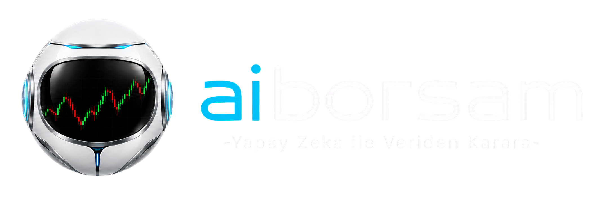

| Saat (TR) | Asama | Aciklama |
|---|---|---|
| 08:00 - 08:45 | Veri Toplama (Ana) | KAP, haber, makroekonomik, kuresel piyasa ve onceki gun fiyat/hacim verilerinin toplanmasi |
| 08:45 - 09:00 | Veri Dogrulama | Veri dogrulama, eksik veri kontrolu, duplikasyon temizligi ve kaynak saglik kontrolu |
| 09:00 - 09:30 | Sabah Rejim Taramasi | Sabah piyasa rejimi, doviz, emtia, kuresel vadeliler ve acilis oncesi son verilerin taranmasi |
| 09:30 - 09:40 | Skorlama | Endeks ve hisse skorlamalarinin tamamlanmasi |
| 09:40 - 09:45 | Rapor Olusturma | Rapor olusturma, son kontrol ve yayinlama |
| Kural | Aciklama |
|---|---|
| Islem gunu kontrolu | Sistem her calismadan once Borsa Istanbul islem takvimini kontrol eder. Hafta sonu, resmi tatil veya BIST kapali gunlerde normal gunluk rapor uretilmez. Yarim islem gunleri ayrica tanimlidir ve otomasyon saatleri islem takvimine gore otomatik degisir. BIST teknik nedenle gec acilirsa veya islemleri durdurursa yoneticiye uyari gider |
| Saat dilimi | Butun zamanlar Europe/Istanbul saat diliminde tutulur. UTC veya farkli dilimden gelen veriler otomatik Turkiye saatine cevrilir. Her haber, KAP bildirimi ve fiyat verisi icin hem kaynak zamani hem sisteme alinma zamani kaydedilir |
| Tekrar deneme | Bir kaynak ilk denemede acilmazsa hemen atlanmaz: en az 3 deneme, artan bekleme — 1. deneme aninda, 2. deneme 30 sn sonra, 3. deneme 90 sn sonra. Tum denemeler basarisizsa yedek kaynaga gecilir ve yonetici kaydina hata yazilir |
| Veri tazelik seviyeleri | Son 24 saat kurali tek basina yeterli degildir: 0-3 saat = Cok Taze · 3-12 saat = Taze · 12-24 saat = Kullanilabilir · 24s+ = Eski Veri. Kritik gelisme (buyuk sozlesme, sermaye artirimi, mahkeme karari, kredi notu degisikligi, jeopolitik gelisme) 24 saatten eski olsa bile "Devam eden etki" etiketiyle analizde kalir — tamamen silinmez |
| Veri kesim zamani | Normal veri kesim zamani 09:40. 09:40'tan sonra gelen bilgiler normal rapora dahil edilmez, ancak kritik onem seviyesindeyse rapor yayinlanmadan once sisteme alinir. 09:45'ten sonra gelenler bir sonraki rapora veya gun ici bildirim sistemine aktarilmak uzere kaydedilir |
| Tahmin yasagi | Eksik fiyat, hacim, CDS, VIOP veya KAP verisi icin yapay deger uretilmez. Onceki gunun verisi yeni veri gibi kullanilmaz. Eski veri kullanimi zorunluysa "ESKI VERI" etiketiyle gosterilir ve skor guveni dusurulur. Kritik veri eksikse ilgili kategori puani tahmin edilmez; toplam skor yeniden normalize edilir |
| Veri yok kurali | Kaynak bos dondugunde sifir yazilmaz — sifir ile veri yok farkli tutulur. Veri yoksa alan NULL / "VERI YOK" kaydedilir. Eksik veriyle hesaplanan skorun guven orani otomatik dusurulur |
| Veri Tipi | Ana Kaynak | 1. Yedek | 2. Yedek |
|---|---|---|---|
| KAP bildirimleri | KAP resmi site | BIST duyuru | Haber ajansi |
| Endeks bilesenleri | Borsa Istanbul | KAP | TradingView |
| Fiyat ve hacim | Yahoo Finance | Google Finance | TradingView |
| Doviz (USD/TRY) | Yahoo TRY=X | Google USD-TRY | TradingView USDTRY |
| CDS | worldgovernmentbonds | Trading Economics | Haber kaynaklari |
| Emtia | Yahoo vadeli | Google COMEX | BIST kiymetli maden |
| Kuresel vadeliler | Investing | Yahoo Finance | Google Finance |
| Haber | KAP | BloombergHT / Investing TR | Borsanin Gundemi / Borsa Gundem / Haber7 / Mynet |
| Kural | Aciklama |
|---|---|
| Ariza isareti | Bir kaynak art arda 3 kez hata verirse yonetici panelinde "KAYNAK ARIZALI" olarak isaretlenir; ilk basarili taramada isaret kalkar |
| Panel ayarlari | Her kaynak icin panelde ayarlanabilir: aktif/pasif · ana/yedek kaynak · tarama baslangic saati · tarama sikligi · maksimum sayfa sayisi · maksimum haber sayisi · zaman asimi suresi · tekrar deneme sayisi · kaynak guven puani · veri tazelik suresi · kaynak turu · cekme yontemi · son basarili calisma · son hata mesaji — kod degisikligi olmadan (config/kurallar.json + app/panel/ayarlar.py) |
| Kural | Aciklama |
|---|---|
| Merkezi akis once | Her sabah 100 sirketin profil+bildirim sayfasini kontrol etmek yerine once merkezi KAP bildirim akisi taranir |
| Secici detay | Son 24 saatte bildirim yapan XK100 sirketleri merkezi listeden belirlenir; sadece bildirim yapan sirketlerin bildirim detayi ve profili acilir |
| Yuk azaltma | Tum 200 linkin her sabah gereksiz taranmasi sistem yukunu, engellenme riskini ve calisma suresini artirir — bu nedenle secici tarama zorunludur |
| Profil yenileme | Sirket profil bilgileri her gun degil, haftalik veya bir degisiklik algilandiginda yenilenir |
| Benzersiz bildirim no | Her KAP bildirimi icin benzersiz bildirim numarasi kaydedilir; ayni bildirim ikinci kez islenmez |
| Revizyon/iptal | KAP'ta sonradan duzeltilen veya iptal edilen bildirimler eski kaydin ustune YAZILMAZ — yeni surum olarak kaydedilir |
| Kural | Aciklama |
|---|---|
| Kaydedilecek alanlar | Sadece baslik alinmaz: baslik + ozet + yayin saati + guncellenme saati + kaynak adi + yazar bilgisi + orijinal link kaydedilir. Yayin tarihi ile guncelleme tarihi farkliysa ikisi de tutulur |
| Eslestirme kurali | Sadece anahtar kelime gecmesi yeterli DEGILDIR — sirket kodu, sirket adi, marka adi, bagli ortaklik ve yonetici isimleriyle eslestirme yapilir |
| Ayri etiketler | Reklam, sponsorlu icerik, forum yorumu, kullanici yorumu ve tekrar yayinlanan otomatik icerikler ayri etiketlenir ve analizde agirliklari dusuktur |
| Duplikasyon eslestirme | Ayni haberin basligi degistirilerek farkli sitelerde yayimlanmasina karsi metin benzerligi kontrolu yapilir. Eslestirme: baslik benzerligi · metin benzerligi · ayni sirket/olay · ayni tarih-saat araligi · ayni kaynak aciklamasi |
| Tek kayit kurali | Ayni haber birden fazla guvenilir kaynakta bulunursa tek haber kaydi tutulur, ancak tum kaynaklar haberin altinda listelenir |
| Dogrulama puani kurali | Kaynak sayisi tek basina dogrulama puani sayilmaz — on farkli sitenin ayni ajans haberini kopyalamasi on bagimsiz dogrulama KABUL EDILMEZ |
| Kural | Aciklama |
|---|---|
| OHLC kurali | En yuksek fiyat, acilis ve kapanistan dusuk olamaz; en dusuk fiyat, acilis ve kapanistan yuksek olamaz. Kurala uymayan veri otomatik olarak analizden cikarilir ve dogrulamaya alinir |
| Fiyat serisi tipi | Teknik analizde kullanilan fiyat serilerinin bedelsiz sermaye artirimi, hisse bolunmesi ve temettu etkilerine gore duzeltilmis veya duzeltilmemis oldugu acikca belirtilir |
| Tek seri kurali | Tum teknik gostergelerde ayni fiyat serisi kullanilir — bir gostergede duzeltilmis, digerinde duzeltilmemis fiyat kullanilmasina izin verilmez |
| Kod/endeks takibi | Gecmis verilerde sirket kodu degisikligi ve endeks degisikligi takip edilir |
| Kural | Aciklama |
|---|---|
| Izlenebilirlik | Raporda kullanilan her verinin hangi kaynaktan, hangi saatte ve hangi islem adimiyla geldigi geriye donuk izlenebilir |
| Calisma numarasi | Her gunluk calisma icin benzersiz numara: 2026-07-12-R1. Ayni gun otomasyon yeniden calistirilirsa onceki rapor silinmez — R2, R3... yeni surum olusur. Her raporun hangi veri surumuyle olusturuldugu kaydedilir |
| Idempotency | Ayni gorev yanlislikla iki kez calisirsa ayni veri iki kez kaydedilmez — her kayit icin benzersiz anahtar: KAP icin bildirim numarasi · haber icin kaynak+link+yayin zamani · fiyat icin hisse kodu+tarih · endeks icin endeks kodu+tarih |
| Uc katmanli saklama | Ham veri (sonradan degistirilmez) · Temizlenmis veri (duzeltilebilir, degisiklik kaydi tutulur) · Rapor verisi (kalici) ayri tablolarda tutulur. Kaynaklardan cekilen ham HTML/cevaplar belirlenen sure boyunca arsivlenir. Veri saklama suresi yonetici panelinden ayarlanabilir |
| Log ve denetim | Otomasyonun her islemi loglanir: hangi gorev basladi/tamamlandi · kac veri cekildi/elendi/birlestirildi/hatali bulundu · hangi kaynak calismadi · hangi yedek kaynak kullanildi · islem suresi (sn) · kim/hangi servis ayar degistirdi. Loglar panelden tarih ve kaynak bazinda filtrelenebilir |
| Yasal ve teknik erisim | Taramalar sitelerin kullanim kosullari, robots kurallari, API sinirlari ve veri lisanslari dikkate alinarak yapilir. Resmi API varsa HTML kazima yerine API tercih edilir. Kullanici adi, sifre, API anahtari kod icine acik metin olarak yazilmaz — guvenli ortam degiskenlerinde saklanir. Hiz sinirlamasi uygulanir; ayni kaynaga cok kisa surede yuzlerce istek gonderilmez |
| Veri Toplama Asamasi Ciktisi (Endeks Skorlama + Hisse Taramasina aktarilir) |
|---|
| Toplam taranan kaynak sayisi · Basarili kaynak sayisi · Basarisiz kaynak sayisi · Toplanan KAP bildirimi sayisi · Toplanan haber sayisi · Duplikasyon sonrasi kalan haber sayisi · Fiyat verisi tamamlanan hisse sayisi · Eksik verisi bulunan hisse sayisi · Son veri guncelleme zamani · Veri kalite puani · Genel veri guven orani |
| Talimat | Kural / Calisan Karsiligi |
|---|---|
| Kimi'nin gorevi | Kurallari sayfaya yazi olarak eklemekle kalmaz; tamamini VPS sunucusunda calisan gercek Endeks Skorlama Modulu olarak kodlar: kodlar, veri tabani tablolari, zamanlayicilar, API baglantilari, yonetici paneli ayarlari, log sistemi ve testler hazirlanir |
| Otomasyonu kim calistirir | Kimi calistirmaz. Otomasyonun asil calisma ortami kullanicinin VPS sunucusudur. systemd timer (Pzt-Cuma 08:00, Europe/Istanbul) ile tetiklenir; asama saatleri (09:30-09:38 hesaplama, 09:40 kesim, 09:45 yayin) orkestrator icinde beklenir |
| VPS gunluk akisi | Her islem gunu otomatik: veri toplama → dogrulama → skorlama → rapor hazirlama → rapor yayinlama |
| Web sitesi + mobil uygulama | VPS tarafinda uretilen ayni Endeks Skoru verisini ortak API uzerinden okur (app/api/routes.py — 8 uç kodlandi: 3 müsteri + 5 yonetici, X-Admin-Token korumali) |
| Dis uygulamalar | Sistem bu asamada hicbir dis uygulamaya (mesajlasma kanali vb.) bagli DEGILDIR; yayin yalnizca web sitesi + mobil uygulama uzerinden yapilir |
| Bu serinin gorunurlugu | Bolum 1, 2 ve serideki tum bolumlerin her detayi bu GIZLI sema sayfasinda listelenir; musteri sayfasina kurallarin disina cikmadan gerekli ozellikler eklenir |
| Dosya / Dizin | Gorevi |
|---|---|
| main.py | Ana giris noktasi — systemd timer bunu cagirir |
| app/services/index_scoring/engine.py | Skorlama motoru giris noktasi (KURAL_SURUMU = INDEX-SCORE-V1.0) |
| app/api/routes.py | Ortak API baglantilari — web sitesi + mobil uygulama ayni veriyi buradan okur |
| app/panel/ayarlar.py + config/kurallar.json | Yonetici paneli ayarlari — kod degisikligi gerektirmeden kural duzenleme |
| db/schema.sql | Veri tabani semasi — 6 tablo + UNIQUE/CHECK kisitlari tamam (gercek SQLite ile dogrulandi) |
| systemd/ (service + timer + api + cron) | VPS zamanlayici: Mon..Fri 08:00, Persistent=true, TZ=Europe/Istanbul + xk100-api.service (API 8099) + cron yedegi (09:30 guvenlik agi) |
| backtest.py + app/tasks/ + store.py + collector_adapter.py + confidence.py + validator.py + explainer.py | Bolum 13 modulleri: geriye donuk test, durum makinesi/idempotency, SQLite depo, veri adaptoru, veri guven, hata/anomali, aciklama motoru |
| logs/ + tests/ | Log sistemi alani + test paketi (268/268 test gecti, 19 test dosyasi) |
| Kategori | Maks | Alt Veriler |
|---|---|---|
| Endeks Yonu ve Piyasa Yapisi | 30 | BIST100 (10) · BIST30 (8) · XK100 (12 — asil havuz oldugu icin en yuksek agirlik) · endeks trendleri · momentumlar · piyasa genisligi · goreceli guc |
| VIOP | 15 | BIST30 vadeli · vadeli fiyat yonu · spot-vadeli farki (baz) · acik pozisyon degisimi · vadeli hacim · fiyat-acik pozisyon uyumu |
| Hacim ve Piyasa Genisligi | 15 | BIST toplam hacim · XK100 toplam hacim · yukselen/dusen hisse sayisi ve hacimleri · hacimli yukselen/dusen orani |
| Kuresel Piyasalar | 10 | S&P500 vadeli · Nasdaq vadeli · DAX vadeli · MSCI Gelisen Piyasalar · VIX · Dolar Endeksi · Brent petrol |
| Doviz, CDS ve Faiz | 15 | USD/TRY · EUR/TRY · Turkiye 5Y CDS · 2Y ve 10Y tahvil faizleri · Dolar Endeksi · kur/faiz hareketi yonu ve hizi |
| Sektor Rotasyonu | 10 | BIST sektor endeksleri · XK100 sektor dagilimi · gunluk/haftalik sektor performanslari · defansif vs buyume sektorleri · XK100 uyumlu sektor gucu |
| Jeopolitik Risk | 5 | Turkiye'yi dogrudan etkileyen gelismeler · bolgesel savas/gerilim · yaptirim/ambargo · enerji ve ticaret yollari · savunma sanayisi · kuresel siyasi risk (hibrit AI + kural tabanli) |
| TOPLAM | 100 | Endeks Skoru |
| Kural | Aciklama |
|---|---|
| Veri donemi | Sadece 60 gunle hesaplanmaz — trend, yuzdelik, standart sapma ve tarihsel karsilastirma icin en az 260 tamamlanmis islem gunu. Asgari: EMA5≥10 · EMA20≥40 · EMA50≥100 · 20g hacim≥30 · 60g yuzdelik≥90 · 252g yuzdelik≥260 gun. Yeterli veri yoksa metrik hesaplanmaz, tahmin uretilmez. Tamamlanmamis gunluk mum uzun vadeli hesaba girmez |
| Trend skoru (0-100) | Kapanis EMA20 ustu: 30 · EMA5>EMA20: 20 · EMA20>EMA50: 25 · EMA20 son 5 gun egimi pozitif: 15 · Kapanis son 20 gun orta seviye ustu: 10. Negatif deger alamaz |
| Momentum skoru | 1 gunluk getiri %20 + 5 gunluk %35 + 20 gunluk %45 — getiriler sabit sinira gore degil, endeksin kendi son 252 gunluk dagilimina gore yuzdelik puana cevrilir (dusuk/yuksek volatilite donemine otomatik uyum) |
| Kapanis kalitesi | (Kapanis - Gunluk En Dusuk) / (En Yuksek - En Dusuk) → 0-100. En yuksek=en dusuk ise 50 kabul edilir ve veri guveni dusurulur |
| XK100 goreceli guc | XK100 vs BIST100 performansi 1/5/20 gunde olculur. XK100 daha gucluyse pozitif katki; BIST100 yukselirken XK100 geride kaliyorsa risk uyarisi; BIST100 negatif + XK100 pozitifse "Katilim Endeksi'ne ozel goreceli guc" kaydedilir |
| Puan normalizasyon | Her alt metrik once 0-100 normalize edilir. Kategori Puani = Maks x Normalize / 100 (orn. VIOP normalize 80 → 15x80/100 = 12). Kategori icindeki metrik agirliklari toplami %100 olmak zorundadir |
| Eksik veri kurali | Eksik veri icin sifir puan YAZILMAZ — metrik NULL kaydedilir. Endeks Skoru = Kazanilan Toplam Puan / Kullanilabilir Toplam Agirlik x 100. Kullanilabilir agirlik <%80 → "VERI GUVENI YETERSIZ — SINIRLI VERIYLE HESAPLANDI"; <%65 → yeni hisse onerisi uretilmez: "NAKITTE KAL / VERI BEKLE" |
| Veri guven orani | Mevcut veri agirligi · veri tazeligi · kaynak dogrulamasi · kaynaklar arasi uyum · eksik veri orani · AI siniflandirma guveni · anormal veri sayisi → 0-100 ayri gosterilir |
| Ayni girdi = ayni sonuc | Sayisal Endeks Skoru deterministiktir: ayni veri + ayni kural surumu + ayni ayarlar → ayni sonuc. AI ciktisi degisse bile sayisal kategoriler degismez. Rapor tekrar uretilirse oncekinin ustune yazilmaz — yeni surum (R2) olusur |
| Golge mod | Ilk gunden musteri raporunda kesin karar olmaz: skor hesaplanir, panelde gorulur, arsivlenir, gercek piyasa ile karsilastirilir. Yeterli testten sonra aktif baglanir |
| Alt Puan | Deger |
|---|---|
| BIST30 vadeli fiyat yonu | 4 |
| Spot-vadeli fiyat farki (baz) | 3 |
| Acik pozisyon degisimi | 4 |
| Vadeli islem hacmi | 2 |
| Vade yapisi ve kontrat gecisi | 2 |
| Fiyat x Acik Pozisyon | Sinyal |
|---|---|
| Fiyat yukseliyor + Acik pozisyon artiyor | Guclu pozitif sinyal |
| Fiyat yukseliyor + Acik pozisyon azaliyor | Kisa pozisyon kapama / zayif pozitif |
| Fiyat dusuyor + Acik pozisyon azaliyor | Pozisyon kapama / orta negatif |
| Fiyat dusuyor + Acik pozisyon artiyor | Guclu negatif sinyal |
| Alt Puan | Deger |
|---|---|
| BIST toplam hacim / 20 gunluk ortalama | 4 |
| XK100 toplam hacim / 20 gunluk ortalama | 4 |
| Yukselen hacim / dusen hacim orani | 3 |
| Hacimli yukselen hisse orani | 2 |
| Piyasaya katilim genisligi | 2 |
| Hacim Uyum Kurali | Sinyal |
|---|---|
| Endeks yukseliyor + hacim 20g ortalama ustu | Pozitif hacim teyidi |
| Endeks yukseliyor + hacim dusuyor | Zayif / teyitsiz yukselis |
| Endeks dusuyor + hacim yukseliyor | Guclu satis baskisi |
| Endeks dusuyor + hacim dusuyor | Zayif satis / kararsiz piyasa |
| Kuresel alt puanlar (10) | Kural |
|---|---|
| S&P500 vadeli 2 · Nasdaq vadeli 2 · DAX vadeli 1.5 · MSCI EM 1.5 · VIX 1.5 · Brent+Dolar Endeksi 1.5 | Sadece anlik yon degil: anlik degisim + onceki kapanisa gore degisim + 5 gunluk trend + 20 gunluk trend + 60 gunluk yuzdelik birlikte kullanilir |
| VIX | Yukselisi genel olarak risk azaltici; VIX seviyesi ile VIX degisim hizi ayri degerlendirilir |
| Brent petrol | Hizli yukselis Turkiye icin maliyet/cari denge riski → negatif. Petrol dususu otomatik tam pozitif uretemez — sebep kuresel talep daralmasiysa kuresel riskle birlikte degerlendirilir |
| Doviz-CDS-Faiz alt puanlar (15) | Kural |
|---|---|
| USD/TRY yon ve degisim hizi 4 · CDS 5 · 2Y/10Y faiz 3 · EUR/TRY + Dolar Endeksi 2 · kur-CDS-faiz uyumu 1 | Kur: sadece yukselis/dusus degil — 1g/5g degisim, 20g volatilite, 252g yuzdelik, ani sicrama, EMA20/EMA50 iliskisi. Tarihsel volatilitenin cok uzerindeyse risk puani daha hizli dusurulur |
| CDS | Seviye + 1g/5g/20g degisim + 1 yillik yuzdelik. Dusuyorsa pozitif, yukseliyorsa negatif. Yuksek ama dusus trendindeyse orta puan; dusuk ama hizli yukseliyorsa risk uyarisi. CDS eksikse onceki gun yeni veri gibi kullanilmaz — "SON GUNCEL VERI" etiketiyle gosterilir |
| Faiz | Seviye + gunluk degisim + getiri egrisi + 2Y-10Y farki + ani hareket. Faiz, kur ve CDS ayni anda kotulesiyorsa basit toplam yerine ek risk katsayisiyla guclendirilebilir (panelden aktif/pasif) |
| Alt puanlar | Deger |
|---|---|
| Pozitif sektor orani | 3 |
| XK100 agirlikli sektorlerin goreceli gucu | 4 |
| Defansif ve buyume sektorleri arasindaki denge | 2 |
| Sektor hareketinin genisligi ve devamligi | 1 |
| Katman | Aciklama |
|---|---|
| 1. Kural tabanli | Kaynak ve anahtar olay kontrolu |
| 2. AI siniflandirma | Metin siniflandirma/dil modeliyle olay ozeti, etki yonu ve siddet tespiti |
| 3. Kod puanlama motoru | AI'dan gelen yapilandirilmis JSON sonucu puana ceviren kodlanmis motor — AI dogrudan "Endeks Skoru 72 olsun" diyemez |
| Kural | Aciklama |
|---|---|
| Kaynak zorunlulugu | AI cevabi kesin gercek olarak kaydedilmez. Kaynak linki olmayan veya sistemdeki haber verisiyle eslesmeyen model sonucu kullanilmaz |
| Guven esigi | Model guveni 0.70'in altindaysa olay kesin puana cevrilmez — "YONETICI KONTROLU" etiketi alir |
| AI zorunlu mu? | Hayir. BIST100/30/XK100, VIOP, hacim, doviz, CDS, faiz, kuresel puanlar tamamen Python + matematiksel kurallarla hesaplanir. AI sadece serbest metin anlamada kullanilir (jeopolitik siniflandirma, ozetleme, sektor etkisi, olay birlestirme, haber tonu) |
| AI cokerse | Sistem durmaz: sayisal kategoriler normal hesaplanir, jeopolitik kural tabanli hesaplanir, incelenemeyen haberler "AI ANALIZI YOK" etiketi alir, genel veri guveni dusurulur, panelde uyari gosterilir — Endeks Skoru uretilmeye devam edilir |
| Skor Araligi | Rejim | Kural |
|---|---|---|
| 80.00 - 100 | GUCLU POZITIF | Yuksek hisse agirligina izin verilebilir; nihai oran Hisse Skorlama + Portfoy bolumunde belirlenir |
| 65.00 - 79.99 | POZITIF | Secici hisse alimina izin; portfoyde belirli oranda nakit korunur |
| 50.00 - 64.99 | ORTA / NOTR-POZITIF | Sadece yuksek skorlu hisseler; hisse sayisi ve toplam pozisyon sinirlanir |
| 35.00 - 49.99 | TEMKINLI / NOTR-NEGATIF | Yeni pozisyon esigi yukseltilir; dusuk guvenli hisseler elenir; nakit artirilir |
| 0.00 - 34.99 | NEGATIF | Yeni pozisyon ciddi sinirlanir; gerekirse "NAKITTE KAL"; sadece cok yuksek hisse skoru + yuksek veri guveni + belirgin pozitif ayrisma varsa sinirli istisna |
| Rejim Etiketi (sayisal veriden uretilir) | Tetikleyici |
|---|---|
| Uc ana endeks negatif | BIST100 + BIST30 + XK100 ayni anda negatif → hisse esigi yukselir, nakit artar; skor <35 → "NAKITTE KAL" varsayilan karar |
| BIST100 pozitif, XK100 negatif | XK100 hisseleri icin risk katsayisi — hisse skorundan otomatik kesinti yapilmaz; "Piyasa Uyum Katsayisi" dusurulur |
| XK100 pozitif, BIST100 negatif | Goreceli guc pozitif kaydedilir; genel piyasa riski nedeniyle toplam portfoy agirligi sinirli |
| "DAR KATILIMLI YUKSELIS" | BIST30 pozitif + piyasa genisligi negatif → yukselis az sayida buyuk sirkette; genel piyasa pozitif isaretlenmez |
| "TEYITSIZ YUKSELIS" | Endeksler pozitif + VIOP ve hacim negatif |
| "ZAYIF SATIS / KARARSIZLIK" | Endeksler negatif + hacim dusuk + VIOP notr |
| "GENIS TABANLI POZITIF REJIM" | Endeks + VIOP + hacim + kuresel ayni anda pozitif |
| Pozisyon Filtresi — Endeks Skoru | Azami Hisse Agirligi |
|---|---|
| 80-100 | %100'e kadar |
| 65-79.99 | %85 |
| 50-64.99 | %65 |
| 35-49.99 | %40 |
| 0-34.99 | %20 |
| Kural | Aciklama |
|---|---|
| Skor anomali kontrolu | Toplam skor onceki skora gore 25 puandan fazla degisirse veya bir kategori tek calismada 70+ normalize degisim gosterirse kaynak verisi kontrol edilir. Anomali dogrulanamazsa rapor otomatik yayinlanmaz — panelde "SKOR ANOMALISI — DOGRULAMA GEREKIYOR" |
| Aciklama motoru | Sistem sadece puan gostermez, nedenini uretir. Metin sayisal verilerden uretilir; AI kullanilsa bile hesaplanmamis veya kaynakta olmayan gerekce eklenemez. Ornek: "Endeks Skoru 71.5 ile pozitif bolgededir. XK100 ve BIST100 trendleri pozitif, piyasa genisligi destekleyicidir. VIOP tarafinda acik pozisyon artisi yukselisi teyit etmektedir. Buna karsilik USD/TRY ve CDS hareketi risk puanini sinirlamaktadir..." |
| Hata/uyari tetikleyicileri | BIST100/30/XK100 verisi eksik · XK100 liste dogrulanamadi · VIOP eksik · CDS guncel degil · agirliklar 100 degil · normalize puan 0-100 disi · kategori maksimumu asildi · veri guveni esik alti · skor olagan disi degisti · ayni veriyle farkli skor · jeopolitik AI coktu · hesaplama yetismedi · API mobil uygulamaya ulasmadi |
| Zorunlu testler | Kategori/metrik agirlik toplami · eksik veri · sifira bolme · tekrarlanan veri · ayni girdiden ayni sonuc · puan sinirlari · VIOP senaryo · kur ve CDS ani hareket · jeopolitik servis kapali · API cevap · DB benzersizlik · zamanlama · yayin engeli |
| Geriye donuk test | Canliya almadan once en az 1 yillik (mumkunse 3 yillik) geriye donuk hesaplama. Gelecek tarihli veri kullanilmaz; gunun skoru sadece o gunun kesim saatine kadar mevcut verilerle hesaplanir |
| Kural surumleme | Eski raporlar yeni kurallarla degistirilmez; her rapor kendi surumuyle saklanir: INDEX-SCORE-V1.0 → V1.1 (kucuk esik) → V2.0 (kategori yapisi/ana mantik) |
| Zaman | Asama | Islem |
|---|---|---|
| 08:00-08:45 | VERI_TOPLAMA | KAP, haberler, onceki islem gunu fiyatlari, hacimler, endeks verileri, VIOP verileri ve makro veriler toplanir |
| 08:45-09:00 | VERI_TEMIZLEME | Veriler temizlenir, kaynaklar dogrulanir, duplikasyonlar kaldirilir ve eksik veri kontrol edilir |
| 09:00-09:30 | SABAH_REJIMI | Kuresel vadeli piyasalar, doviz, CDS, emtia, jeopolitik haberler ve sabah piyasa rejimi verileri guncellenir |
| 09:30-09:38 | HESAPLAMA | Endeks Skoru hesaplama motoru calisir (hesaplama sadece bu pencerede izinli; 08:30'da kesinlikle yapilmaz) |
| 09:38-09:40 | KONTROLLER | Kategori sonuclari, veri guveni ve anormal sonuc kontrolleri yapilir |
| 09:40 | VERI KESIM | Normal veri kesim zamani uygulanir |
| 09:40-09:45 | RAPORA_ISLEME | Endeks Skoru, hisse skorlari ve portfoy dagilimi rapora islenir |
| 09:45 | YAYIN | Rapor web sisteminde yayinlanir ve mobil uygulama bildirimi gonderilir |
| Kural | Aciklama |
|---|---|
| 09:40 sonrasi kritik veri | Sistem veriyi onem seviyesine gore degerlendirir. Rapor sonucunu etkileyebilecek seviyedeyse ilgili kategori TEKRAR HESAPLANIR; kritik olmayan veri bir sonraki rapor veya gun ici veri arsivi icin kaydedilir (kritik_veri_karari()) |
| Zaman dilimi | Europe/Istanbul (zoneinfo); sunucu TZ ayarlanmali. systemd timer ve cron dosyasinda CRON_TZ=Europe/Istanbul tanimli |
| Tetikleme | systemd timer: Mon..Fri 08:00:00 tetik; asama saatleri (08:45/09:00/09:30/09:38/09:40/09:45) orkestrator icinde beklenir. Persistent=true, AccuracySec=1min |
| Cron yedegi | 0 8 * * 1-5 ana akis; 30 9 * * 1-5 guvenlik agi (orkestrator cokmisse hesaplama motoru dogrudan tetiklenir) |
| Plan butunlugu | plani_dogrula() modul yuklenirken calisir: zaman boslugu/cakismasi, 08:30 yasagi ve 09:30-09:38 penceresi ihlal edilirse ZamanlamaHatasi — sistem hatali planla asla baslamaz |
| Metrik | Asgari Islem Gunu | Kural |
|---|---|---|
| EMA5 | 10 | Yeterli veri yoksa None doner — uydurma deger uretilmez |
| EMA20 | 40 | Yeterli veri yoksa None doner |
| EMA50 | 100 | Yeterli veri yoksa None doner |
| 20 gunluk ortalama hacim | 30 | Yeterli veri yoksa None doner |
| 60 gunluk yuzdelik hesaplari | 90 | Yeterli veri yoksa None doner |
| 252 gunluk tarihsel yuzdelik | 260 | Yeterli veri yoksa None doner |
| Trend / standart sapma / tarihsel karsilastirma | 260 | En az 260 tamamlanmis islem gunu zorunlu |
| Kural | Aciklama |
|---|---|
| Eksik metrik = tahmin YOK | Yeterli tarihsel veri yoksa ilgili metrik hesaplanmaz (None). Eksik metrik icin tahmini veya uydurma puan asla uretilmez — veri_dogrula() raporunda tahmin_uretildi her zaman False |
| Tamamlanmamis mum | Canli/kapanisi kesinlesmemis gunluk mum (tamamlandi=False) uzun vadeli trend hesaplarina girmez; tamamlanmis_seri() filtreler |
| EMA formulu | Ussel ortalama: alfa = 2/(N+1); ilk EMA degeri serinin ilk N degerinin basit ortalamasi (SMA) |
| veri_dogrula() raporu | Her calismada: toplam/tamamlanmis/tamamlanmamis mum sayisi, metrik bazinda hesaplanabilirlik + eksik gun sayisi — 09:38-09:40 KONTROLLER asamasinda ve panelde gosterilir |
| Trend Kurali (0-100) | Puan | Kosul |
|---|---|---|
| Kapanis > EMA20 | 30 | EMA20 icin en az 40 tamamlanmis gun gerekir |
| EMA5 > EMA20 | 20 | EMA5>=10 gun, EMA20>=40 gun |
| EMA20 > EMA50 | 25 | EMA50 icin en az 100 gun gerekir |
| EMA20 son 5 gun egimi pozitif | 15 | Bugunku EMA20 vs 5 gun onceki EMA20 (>=45 gun) |
| Kapanis > son 20 gun orta seviyesi | 10 | Orta seviye = (20g en yuksek + 20g en dusuk)/2 |
| Bilesen | Kural |
|---|---|
| Momentum skoru | 1 gunluk getiri %20 + 5 gunluk %35 + 20 gunluk %45. Getiriler sabit sinira gore DEGIL, endeksin kendi son 252 islem gunundeki dagilimina gore yuzdelik puana cevrilir — dusuk/yuksek volatilite donemlerine otomatik uyum. Ornek: 5 gunluk getiri son 252 gunluk 5 gunluk getirilerin %80'inden gucluyse puan 80 |
| Piyasa genisligi skoru | 6 bilesenin esit agirlikli ortalamasi: yukselen/toplam · dusmeyen/toplam · EMA20 ustu oran · EMA50 ustu oran · yeni 20g zirve orani · (1 - yeni 20g dip orani). XK100 icin ayrica, sadece XK100 bilesenleriyle hesaplanir |
| Kapanis kalitesi skoru | (Kapanis - Gunluk En Dusuk) / (Gunluk En Yuksek - Gunluk En Dusuk) x 100. 0'a yakin = dusuge yakin kapanis; 1'e yakin = yuksege yakin kapanis. Yuksek==Dusuk ise kalite 50 kabul edilir ve veri guveni dusurulur |
| XK100 goreceli guc | BIST100'e gore 1/5/20 gunluk performans. XK100 daha guclu -> pozitif katki. BIST100 yukselirken XK100 dusuyor/belirgin geride (>=0.5 puan) -> RISK_UYARISI. BIST100 negatif + XK100 pozitif -> KATILIM_GORECELI_GUC kaydi |
| Alt birlesim agirliklari | BIST100/BIST30: TREND %40 + MOMENTUM %35 + KAPANIS_KALITESI %25. XK100: TREND %30 + MOMENTUM %25 + KAPANIS_KALITESI %15 + PIYASA_GENISLIGI %15 + GORECELI_GUC %15. Eksik bilesen katilmaz, kalan agirliklar normalize edilir, veri guveni dusurulur — tahmin puan uretilmez |
| Kategori puani | Endeks skoru (0-100) x agirlik/100: BIST100x10 + BIST30x8 + XK100x12 = maks 30 puan. Skoru olmayan endeks 0 puan + uyari (kategori_puani) |
| Alt Puan | Maks | Kural |
|---|---|---|
| BIST30 vadeli fiyat yonu | 4 | Fiyat-acik pozisyon matrisinin yon katsayisi ile 0-4 arasi (GUCLU_POZITIF:4, ZAYIF_POZITIF:3, NOTR:2, ORTA_NEGATIF:1, GUCLU_NEGATIF:0) |
| Spot-vadeli fiyat farki (baz) | 3 | Baz = Vadeli - Spot; duzeltilmis bazin son 60 gunluk dagilimina gore yuzdelik puanlama (saglikli 40-75: 3 puan; sicak 75-90: 2; zayif 10-40: 1; asiri: 0 + risk isareti) |
| Acik pozisyon degisimi | 4 | TEK BASINA kullanilmaz — matris uzerinden: GUCLU_POZITIF 4, ZAYIF_POZITIF 2.5, NOTR 2, ORTA_NEGATIF 1.5, GUCLU_NEGATIF 0 |
| Vadeli islem hacmi | 2 | Son hacim son 20 gunluk ortalamanin ustundeyse 2, degilse 1; veri yoksa tahmin yok |
| Vade yapisi ve kontrat gecisi | 2 | Contango (ardisik vade farki pozitif): 2 · backwardation (satis baskisi): 0 · rollover (gecis) gunu: 1 (notr) |
| Kural | Aciklama |
|---|---|
| Fiyat + acik pozisyon matrisi | Fiyat↑ + AP↑ = GUCLU_POZITIF · Fiyat↑ + AP↓ = ZAYIF_POZITIF (kisa pozisyon kapama) · Fiyat↓ + AP↓ = ORTA_NEGATIF (pozisyon kapama) · Fiyat↓ + AP↑ = GUCLU_NEGATIF · Fiyat sabitse acik pozisyon degisimi NOTR'dur (tek basina sinyal degildir) |
| Baz duzeltmesi | Vade sonuna yaklastikca baz dogal olarak sifira yaklasir: duzeltilmis_baz = baz / (1 + kalan_gun/365). Puanlama duzeltilmis bazin 60 gunluk dagilimina gore yapilir |
| Asiri baz riskleri | Yuzdelik >= 90: ASIRI_IYIMSERLIK (kalabalik pozisyon riski) · yuzdelik <= 10: ASIRI_KORKU (yogun kisa pozisyon riski) — her ikisi de 0 puan + risk isareti |
| Kategori toplami | Alt puanlar toplanir, maks 15. Eksik veri 0 puan + uyari; sinir asimi kirpilir — tahmin/uydurma puan URETILMEZ |
| Alt Puan | Maks | Kural |
|---|---|---|
| BIST toplam hacim / 20g ortalama | 4 | Bugunun toplam hacmi (ust sinir uygulanmis) / 20 gunluk ortalama + hacim uyum matrisi ile puanlama (en az 30 gun veri) |
| XK100 toplam hacim / 20g ortalama | 4 | Ayni kural XK100 toplam hacmi icin ayri hesaplanir |
| Yukselen hacim / dusen hacim orani | 3 | Oran >= 2.0: 3 · 1.2-2.0: 2 · 0.8-1.2: 1.5 (notr) · 0.5-0.8: 0.5 · < 0.5: 0 |
| Hacimli yukselen hisse orani | 2 | Kendi 20g hacim ortalamasi ustunde yukselen hisse orani: >=%60: 2 · %40-60: 1.5 · %25-40: 1 · %10-25: 0.5 · <%10: 0 |
| Piyasaya katilim genisligi | 2 | Yukselen hisse orani: >=%70: 2 · %55-70: 1.5 · %45-55: 1 · %30-45: 0.5 · <%30: 0 |
| Kural | Aciklama |
|---|---|
| Hacim uyum matrisi | Endeks↑ + hacim 20g ustu = POZITIF_HACIM_TEYIDI (4) · Endeks↑ + hacim dusuk = ZAYIF_TEYITSIZ_YUKSELIS (2.5) · Endeks↓ + hacim yuksek = GUCLU_SATIS_BASKISI (0) · Endeks↓ + hacim dusuk = ZAYIF_SATIS_KARARSIZ (1.5) · Endeks sabit = NOTR (2) |
| Tek hisse ust siniri | Her hissenin hacim katkisi toplam hacmin %10'unu asamaz; asimlar kirpilir (hacim_sinirla). Ornek: 90+10+10=110 -> tavan 11, kirpilmis toplam 31. Kirpme durumu raporda 'kirpildi' olarak isaretlenir |
| Kategori toplami | Alt puanlar toplanir, maks 15. Eksik veri 0 puan + uyari; sinir asimi kirpilir — tahmin/uydurma puan URETILMEZ |
| Alt Puan | Maks | Kural |
|---|---|---|
| S&P 500 vadeli | 2 | 5 boyut birlikte: anlik degisim %20 + onceki kapanis %15 + 5g trend %20 + 20g trend %25 + 60g yuzdelik %20 |
| Nasdaq vadeli | 2 | Ayni 5 boyut kurali |
| DAX vadeli | 1.5 | Ayni 5 boyut kurali |
| MSCI Gelisen Piyasalar | 1.5 | Ayni 5 boyut kurali |
| VIX | 1.5 | Seviye (%60) + degisim hizi (%40) AYRI: DUSUK<15 tam, NORMAL 15-25, YUKSEK>25, ASIRI_STRES>35; hizli yukselis risk azaltici (korku), hizli dusus risk istahi |
| Brent + Dolar Endeksi | 1.5 | Ortak etki (%50/%50): Brent hizli yukselis (5g >= %5) -> Turkiye maliyet/cari denge riski = negatif; dusus otomatik TAM pozitif degil (talep daralmasi varsa daha da dusurulur); Dolar Endeksi yukselisi baskidir |
| Kural | Aciklama |
|---|---|
| 5 boyut birlikte | Hicbir varlik sadece anlik yonle puanlanmaz. Anlik degisim agirligi en fazla %20'dir; 20 gunluk trend agirligi (%25) anliktan buyuktur. Yuzdelik boyutu verisi yoksa agirligi diger boyutlara dagitilir — tahmin yok |
| VIX ayrimli degerlendirme | Ayni seviyede farkli degisim hizi farkli puan uretir: seviye 27 + hizli dusus -> toparlanma (0.82/1.5); seviye 27 + hizli yukselis -> korku (0.15/1.5). Degisim hizi verisi yoksa sadece seviye kullanilir |
| Brent kurallari | Hizli yukselis (5 gun >= %5) -> puan 0 + uyari. Dusus -> en fazla 0.75 skoru (tam 1.0 degil). Dususun sebebi kuresel talep daralmasiysa skor 0.4'a dusurulur ve kuresel risk kategorisiyle birlikte degerlendirilir |
| Kategori toplami | Alt puanlar toplanir, maks 10. Eksik veri 0 puan + uyari; sinir asimi kirpilir — tahmin/uydurma puan URETILMEZ |
| Alt Puan | Maks | Olcumler |
|---|---|---|
| USD/TRY yonu ve degisim hizi | 4 | 1g degisim · 5g degisim · 20g volatilite · 252g yuzdelik · ani kur sicramasi (>3x vol) · EMA20/EMA50 iliskisi |
| Turkiye 5 yillik CDS | 5 | Mevcut seviye · 1g degisim · 5g degisim · 20g degisim · 1 yillik yuzdelik seviye |
| 2Y + 10Y tahvil faizleri | 3 | Faiz seviyesi · gunluk degisim · getiri egrisi · 2Y-10Y farki · ani faiz hareketi (>=50bp) |
| EUR/TRY + Dolar Endeksi | 2 | 5g degisimler (%50/%50): EUR/TRY dususu iyi, Dolar Endeksi dususu iyi |
| Kur, CDS, faiz uyumu | 1 | Uc faktor de iyiyse 1 puan; her kotulesen 1/3 dusurur |
| Kural | Aciklama |
|---|---|
| Kur risk hizli dusus | Kur artisi tarihsel volatilitenin cok uzerindeyse (>2x) toplam skor 0.5 carpaniyla dusurulur; ani sicrama (|1g| > 3x vol) tespiti ayri uyarilir |
| CDS seviye + trend birlikte | CDS dusuyorsa pozitif, yukseliyorsa negatif. Seviye yuksek (>=500bp) ama 20g dusus trendindeyse orta puan (0.5). Seviye dusuk (<200bp) ama 5g >=30bp hizli yukseliyorsa RISK UYARISI |
| CDS veri tazelik kurali | CDS verisi eksik/taze degilse puan HESAPLANMAZ; onceki gunun degeri yeni veri gibi kullanilmaz, sadece "SON GUNCEL VERI" etiketiyle gosterilebilir |
| Ek risk katsayisi (panel) | Kur+CDS+faiz ayni anda kotulesiyorsa toplam puan basit toplam yerine katsayiyla dusurulur (14.0 / 1.15 = 12.17). config/kurallar.json uzerinden aktif/pasif ve katsayi degistirilebilir — kod degisikligi gerekmez |
| Kategori toplami | Alt puanlar toplanir, maks 15. Eksik veri 0 puan + uyari — tahmin/uydurma puan URETILMEZ |
| Alt Puan | Maks | Kural |
|---|---|---|
| Pozitif sektor orani | 3 | 1g/5g/20g birlesik getirisi pozitif sektor orani: >=%70: 3 · %55-70: 2.25 · %45-55: 1.5 · %30-45: 0.75 · <%30: 0 |
| XK100 agirlikli sektorlerin goreceli gucu | 4 | XK100 agirligiyla agirlikli ortalama getiri: >=+1.0%: 4 · 0.3-1.0: 3 · 0-0.3: 2 · -0.3-0: 1 · <-0.3: 0 |
| Defansif / buyume dengesi | 2 | Buyume-defansif farki (0-1 normalize): ideal aralik 0.35-0.75 = DENGELI 2 puan · >0.75 = ASIRI_BUYUME_DOMINANSI 1 puan · <0.35 = DEFANSIF_KACIS (korku) 0.5 puan |
| Hareketin genisligi + devamliligi | 1 | Genislik: pozitif oran >=%60 -> 0.5, >=%40 -> 0.3. Devamlilik: onceki gunun lider sektorleri gucunu koruyorsa +0.5 (veri yoksa notr 0.25) |
| Her sabah sayisal cevaplanan soru | Yanit uretimi |
|---|---|
| 1. Kac sektor pozitif trendde? | S1_pozitif_sektor_sayisi (birlesik getiri > 0) |
| 2. Kac sektor negatif trendde? | S2_negatif_sektor_sayisi |
| 3. XK100 yogun sektorler guclu mu? | S3: xk100_agirlik >= %10 olan sektorlerin pozitif orani |
| 4. Yukselis 1-2 sektorde mi toplaniyor? | S4_yukselis_daraliyor_mu (pozitif sektor sayisi 1-2 ise True) |
| 5. Yukselis piyasaya yayiliyor mu? | S5_yukselis_yayiliyor_mu (pozitif oran >= %60) |
| 6. Onceki liderler gucunu koruyor mu? | S6: onceki gunun lider sektorlerinin pozitif kalma orani |
| Katman | Gorev |
|---|---|
| 1. Katman — Kural tabanli | Kaynak ve anahtar olay kontrolu (Python): RISK_ANAHTAR_KELIMELER (savas, yaptirim, ambargo, saldiri, gerilim...) ve POZITIF_ANAHTAR_KELIMELER (ateskes, baris, anlasma...) ile kaba risk skoru |
| 2. Katman — AI metin analizi | Metin siniflandirma / buyuk dil modeliyle olay ozeti, etki yonu (OLUMLU/NOTR/OLUMSUZ) ve siddet (DUSUK/ORTA/YUKSEK/KRITIK) tespiti. Cikti JSON formatinda |
| 3. Katman — Kodlanmis motor | AI'in yapilandirilmis JSON sonucunu puana cevirir: risk = sentiment_yon x severity x (turkey_relevance + market_relevance)/2; baz 2.5 + toplam_risk x 2.5 -> 0-5 puan |
| Kural | Aciklama |
|---|---|
| AI izinli alanlar | AI sadece su alanlari uretebilir: event_id, headline, summary, sentiment, severity, turkey_relevance, market_relevance, affected_sectors, source_urls, model_confidence, event_timestamp. Baska alan (ornegin skor_onerisi) REDDEDILIR ve olay puana girmez |
| Kaynak + guven kurallari | source_urls bos olamaz ve en az bir URL sistemdeki haberle eslesmeli — aksi halde sonuc kullanilmaz. model_confidence < 0.70 -> olay otomatik puana cevrilmez, YONETICI KONTROLU etiketi + veri guveni duser |
| AI zorunlu degil | BIST100/30, XK100, VIOP, hacim, doviz, CDS, faiz ve kuresel puanlar tamamen Python + matematiksel kurallarla hesaplanir; AI kullanilmasi ayni veriyle farkli sonuc uretebilir — GEREKSIZDIR. AI sadece serbest metin anlasilmasinda kullanilir (siniflandirma, ozetleme, sektor etki, haber birlestirme, ton) |
| AI calismazsa sistem DURMAZ | Sayisal kategoriler normal hesaplanir, jeopolitik kategori kural tabanli hesaplanir, incelenemeyen haberler "AI ANALIZI YOK" etiketi alir, genel veri guven orani dusurulur, panelde uyari gosterilir — Endeks Skoru uretilmeye devam edilir |
| Kural | Aciklama |
|---|---|
| Normalizasyon formulu | Her alt metrik 0-100 arasinda normalize edilir. Kategori Puani = Maks x Normalize / 100 (ornek: VIOP normalize 80 -> 15x80/100 = 12). Kategori ici metrik agirliklari toplami %100 olmali; ana kategori maks puanlari toplami TAM 100 olmali |
| Panel agirlik kurali | Panelde agirlik degisirse toplam kontrol edilir; 100 degilse ayar kaydedilemez ve uyari gosterilir: "KATEGORI AGIRLIKLARI TOPLAMI 100 OLMALIDIR." |
| Eksik veri = NULL | Eksik metrik NULL kaydedilir (sifir puan YAZILMAZ). Skor eksik kategoriler haric yeniden normalize edilir: ornek: 90 puanlik veri, 63 kazanildi -> 63/90x100 = 70.0; raporda veri guveni ayri gosterilir (yuzde 90) |
| Veri Guven Orani (0-100) | 7 bilesen: mevcut veri agirligi %25 + veri tazeligi %15 + kaynak dogrulamasi %15 + kaynaklar arasi uyum %15 + eksik veri orani %15 + AI siniflandirma guveni %10 + anormal veri %5. Eksik bilesen katilmaz, agirlik dagitilir |
| Yayin esikleri | Kullanilabilir agirlik >= %80: NORMAL yayin · < %80: "VERI GUVENI YETERSIZ — ENDEKS SKORU SINIRLI VERIYLE HESAPLANDI" · < %65: yeni hisse onerisi yok, "NAKITTE KAL / VERI BEKLE" |
| Rejim Araligi | Rejim | Kural / Azami Hisse Agirligi |
|---|---|---|
| 80.00-100.00 | GUCLU POZITIF | Genel piyasa destekleyici, yuksek hisse agirligina izin — azami %100 |
| 65.00-79.99 | POZITIF | Secici hisse alimi, belirli nakit korunur — azami %85 |
| 50.00-64.99 | ORTA / NOTR-POZITIF | Sadece yuksek skorlu hisseler, sinirli pozisyon — azami %65 |
| 35.00-49.99 | TEMKINLI / NOTR-NEGATIF | Esik yukseltilir, dusuk guvenli hisseler elenir — azami %40 |
| 0.00-34.99 | NEGATIF | Yeni pozisyon ciddi sinirlanir, gerekirse NAKITTE KAL — azami %20 |
| Rejim etiketi | Kosul |
|---|---|
| UC_ENDEKS_NEGATIF / NAKITTE KAL | BIST100+BIST30+XK100 ayni anda negatif; skor <35 ise NAKITTE KAL varsayilan |
| XK100_RISK_KAT_SAYISI | BIST100 pozitif + XK100 negatif: skor kesintisi YOK, Piyasa Uyum Katsayisi dusurulur |
| XK100_GORECELI_GUC_POZITIF | XK100 pozitif + BIST100 negatif: goreceli guc kaydedilir, portfoy sinirli |
| Dar Katilimli Yukselis | BIST30 pozitif + piyasa genisligi negatif (az sayida buyuk sirket tasiyor) |
| TEYITSIZ YUKSELIS | Endeksler pozitif + VIOP ve hacim negatif |
| ZAYIF SATIS / KARARSIZLIK | Endeksler negatif + hacim dusuk + VIOP notr |
| GENIS TABANLI POZITIF REJIM | Endeks + VIOP + hacim + kuresel ayni anda pozitif |
| Bilesen | Kural / Aciklama |
|---|---|
| VPS + systemd | Otomasyon Kimi tarafindan calistirilmaz; VPS uzerinde systemd timer + servis olarak calisir. Timer sadece tetikler; asil karar bagimlilik zinciridir. main.py -> orkestrator.py -> gorev motoru |
| 8 durum makinesi | WAITING_DATA -> COLLECTING_DATA -> VALIDATING_DATA -> SCORING -> VALIDATING_SCORE -> READY -> PUBLISHED (hata durumunda FAILED). Gecersiz gecis DurumHatasi firlatir |
| Gorev bagimliligi | VERI_TOPLAMA_TAMAMLANDI -> VERI_DOGRULAMA_TAMAMLANDI -> ENDEKS_SKORLAMA_BASLADI -> ENDEKS_SKORLAMA_DOGRULANDI -> HISSE_SKORLAMA_BASLADI -> PORTFOY_DAGILIMI_OLUSTURULDU -> RAPOR_YAYINLANDI. Eksik adim varsa gorev baslamaz |
| Idempotency + run_id | Her gun + her rapor surumu benzersiz: 2026-07-12-INDEX-R1; ayni gun tekrar hesaplama R2, R3... Ayni run_id + ayni girdi parmagi ile ikinci kayit hem uygulama hem DB (UNIQUE) seviyesinde REDDEDILIR |
| Kural surumleme | Yeni kural surumu once GOLGE modda calisir (run_type='GOLGE'); en az 20 gunluk paralel karsilastirma sonrasi yonetici onayiyla canliya alinir. Eski surumler index_score_config'de saklanir, uzerine yazilmaz |
| 6 Veritabani Tablosu | Kisitlar (DB seviyesinde uygulanir) |
|---|---|
| index_score_runs | run_id UNIQUE · total_score 0-100 CHECK · confidence/available_weight 0-100 CHECK · status 8 durum CHECK · run_type CANLI/GOLGE/BACKTEST CHECK |
| index_score_categories | UNIQUE(run_id, category_key) · earned_points <= maximum_points CHECK (kategori maksimumu asilamaz) · normalized_score 0-100 |
| index_score_metrics | UNIQUE(run_id, metric_key) — tekrarlanan veri iki kez kaydedilemez · normalized_score 0-100 · freshness/validation status alanlari |
| index_score_explanations | run_id UNIQUE — aciklama motoru ciktisi (pozitif/negatif etkenler, risk uyarilari, rejim etiketleri, ozet metin JSON) |
| index_score_config | is_active 0/1 CHECK · category_weights JSON (uygulama kurali: toplam 100) · V1.0 baslangic kaydi otomatik |
| geopolitical_events | UNIQUE(run_id, event_id) · model_confidence 0-1 CHECK · model surumu + istem surumu + kaynak listesi JSON |
| 8 API Ucu | Kural |
|---|---|
| GET /api/index-score/latest | Musteri uclari: sadece PUBLISHED + CANLI kayitlar doner. GOLGE ve BACKTEST asla gorunmez. ic alanlar (run_type, calculation_version) cevaptan cikarilir |
| GET /api/index-score/history | |
| GET /api/index-score/{run_id} | |
| GET /api/admin/index-score/{run_id}/metrics | Yonetici uclari: X-Admin-Token zorunlu (tokensuz 403). PUT config: agirlik toplami 100 degilse 422 + "KATEGORI AGIRLIKLARI TOPLAMI 100 OLMALIDIR." Recalculate: yeni revizyon (R2) uretir, R1 korunur. Publish: yayin engeli / GOLGE / BACKTEST -> 409 RED |
| GET /api/admin/index-score/config | |
| PUT /api/admin/index-score/config | |
| POST /api/admin/index-score/recalculate | |
| POST /api/admin/index-score/publish |
| Aciklama + Anomali + Backtest | Kural |
|---|---|
| Aciklama motoru | Sadece puan degil NEDEN uretilir: en guclu 3 pozitif + 3 negatif etken + risk uyarilari + rejim etiketleri + ozet metin. Hesaplanmamis veya kaynakta bulunmayan gerekce eklenemez (NULL kategori gerekce listesine girmez) |
| Skor anomali kontrolu | Toplam skor degisimi > 25 puan veya kategori normalize degisimi > 70 -> kaynak dogrulamasi. Dogrulanamazsa: "SKOR ANOMALISI — DOGRULAMA GEREKIYOR" panel uyarisi + rapor VALIDATING_SCORE durumunda kalir, otomatik yayinlanamaz (publish 409) |
| 11 hata/uyari durumu | Kritik veri eksik (BIST100/BIST30/XK100/VIOP/CDS) · agirlik toplami != 100 · normalize 0-100 disi · maks asimi · veri guveni < 70 · skor anomalisi · ayni veri farkli skor (deterministiklik ihlali) · AI servisi kapali (uyari, sistem durmaz) · hesaplama rapor saatine yetisemedi · API ulasimi yok |
| Geriye donuk test | En az 1 yil (252 gun) veri zorunlu · gelecek verisi kesinlikle kullanilmaz (pencere kurali + sizinti degiskenlik testi) · skor-getiri korelasyonu + rejim bazli getiri + kategori katkilari · sonuc run_type='BACKTEST' ile ayrilir · backtest oneri uretir, kurali OTOMATIK DEGISTIRMEZ |
| 14 Zorunlu Test | Kapsandigi Dosya |
|---|---|
| Kategori agirlik toplami 100 | test_agirliklar.py + test_api.py (PUT 422) |
| Metrik agirlik toplami %100 | test_normalizasyon.py |
| Eksik veri (NULL, sifir degil) | test_normalizasyon.py + test_api.py |
| Sifira bolme korunmasi | test_normalizasyon.py + test_backtest.py |
| Tekrarlanan veri (metric_key UNIQUE) | test_api.py (DB IntegrityError) |
| Ayni girdi ayni sonuc | test_api.py + test_backtest.py (parmak) |
| Puan sinirlari (0-100, maks asimi) | test_api.py + DB CHECK testleri |
| VIOP senaryo testi | test_viop.py (19 test) |
| Kur/CDS ani hareket | test_doviz_cds_faiz.py (21 test) |
| Jeopolitik AI kapali | test_jeopolitik.py + test_validator.py |
| API cevap testi | test_api.py (15 test) |
| DB benzersizlik | test_api.py (run_id + metric_key + CHECK) |
| Zamanlama testi | test_zamanlama.py + test_run_task.py |
| Yayin engeli testi | test_validator.py + test_api.py (409) |
| Denetim maddesi | Terminal dogrulamali sonuc |
|---|---|
| 1. Repo dizini | /mnt/agents/output/borsa-karar-otomasyon — main.py, backtest.py, app/, config/, db/, logs/, systemd/, tests/, README.md, requirements.txt (ls -la ile dogrulandi) |
| 2. Git durumu | GIT DEPOSU DEGIL — "fatal: not a git repository" (git status/branch/log). Aktif dal YOK. Calisma dali olusturulamadi; yerine dosya seviyesi yedek alindi (yedekler/2026-07-13-bolum3-denetim/) |
| 3. Backend teknolojisi | Python 3.12.12, yalnizca standart kutuphane (json, re, sqlite3, http.server, hashlib) — dis bagimlilik YOK (requirements.txt) |
| 4. Frontend teknolojisi | Saf statik HTML/CSS/JS (canvas tabanli grafikler) — build araci YOK (package.json/webpack yok). Kaynak: /mnt/agents/output/telegram-sender/ (docs.html 225.783 bayt, index.html 57.133 bayt, 2 PNG) |
| 5. Veri tabani | SQLite — tek sema dosyasi: db/schema.sql (5.651 bayt, 6 tablo). Calisan .db dosyasi YOK; testler :memory: kullanir |
| 6. Migration sistemi | YOK — yalnizca db/schema.sql (find ile migration/alembic taramasi bos) |
| 7. API servisi | app/api/routes.py — http.server tabanli 8 uc: GET /api/index-score/latest · /history · /{run_id} · GET /api/admin/index-score/{run_id}/metrics · GET+PUT /api/admin/index-score/config · POST /recalculate · POST /publish (X-Admin-Token) |
| 8. systemd servisleri | 4 dosya (ls systemd/): xk100-index-scoring.service (322b) · xk100-index-scoring.timer (366b, Pzt-Cuma 08:00, Persistent) · xk100-api.service (678b, port 8099) · xk100.cron (632b, 09:30 guvenlik agi) |
| 9. Test dosyalari | 20 dosya (ls tests/): test_agirliklar · test_api · test_backtest · test_confidence · test_doviz_cds_faiz · test_endeks_yonu · test_engine · test_explainer · test_hacim_genislik · test_hisse_tarama · test_jeopolitik · test_kuresel · test_normalizasyon · test_panel · test_run_task · test_sektor_rotasyon · test_validator · test_veri_donemi · test_viop · test_zamanlama |
| 10. Sayfa kaynak dosyalari | docs.html + index.html = /mnt/agents/output/telegram-sender/ — deploy hedefi: https://yhuzknwreqwkw.kimi.page (statik) |
| 11. Mobil uygulama | VAR: /mnt/agents/output/kt_borsa — Flutter projesi (pubspec.yaml: name=kt_borsa, version 1.0.0+1, sdk >=3.0.0), lib/ altinda main.dart + borsa_grafik.dart — iskelet asama, API baglantisi yok. Flutter SDK: /mnt/agents/flutter |
| 12. Hisse taramasi dosyalari | app/services/hisse_tarama/ — __init__.py · models.py (HVP-1.0 standart paket) · kapsam.py (kapsam kilidi) · tarama.py (ana giris: tarama_calistir, 10 gorev) + tests/test_hisse_tarama.py (13 test) — Blok 1/22 tamamlandi |
| 13. Endeks skorlama dosyalari | app/services/index_scoring/ — 18 modul: engine (birlesik motor), agirliklar, endeks_yonu, viop, hacim_genislik, kuresel, doviz_cds_faiz, sektor_rotasyon, jeopolitik, normalizasyon, confidence, validator, explainer, collector_adapter, store, veri_donemi, models + app/tasks/run_index_scoring.py + backtest.py |
| 14. Test sayisi iddiasi | TERMINAL DOGRULAMASI: 255/255 test gecti — 20 test dosyasinin tamaminin calistirilmasiyla (toplayici dongu ciktisi: "TERMINAL CIKTISI: 255/255 test gecti"). Sayfada yazan 255/255 iddiasi dogru |
| Degisiklik oncesi adimlar | Sonuc |
|---|---|
| Yedekler | yedekler/2026-07-13-bolum3-denetim/ — docs.html.yedek · index.html.yedek · docs-bolum3-yedek.html · systemd/ (4 dosya) · db/schema.sql · api/routes.py · canli sayfa ekran goruntuleri + HTML anlik goruntuleri (canli-index/canli-docs-denetim-oncesi.png/.html) |
| Calisma dali | Git deposu olmadigindan dali olusturulamadi — dosya seviyesi yedek + ileri donulebilir kopya ile ikame edildi (surum kontrolu eksikligi asagida "Eksik dosyalar"da kayitli) |
| DB yedegi | Calisan .db dosyasi olmadigindan db/schema.sql yedeklendi (sema tek gercek kaynak) |
| Sabit degerlerin kaynagi | Musteri sayfasindaki 09.07.2026, 71.5, ASELS, TUPRS, ALFAS orneklerinin TAMAMI index.html icinde sabit yazili (hardcoded): satir 122 (tarih), 124+206+216+230 (71.5), 233+ (hisse bloklari), JS satir 744 (const val=71.5). API'den gelmiyor — gercek veri baglantisi Bolum 4+ bloklarinda yapilacak |
| Bolum 3 icin durum | Liste |
|---|---|
| Mevcut kod dosyalari | app/services/hisse_tarama/ (4 dosya) + tests/test_hisse_tarama.py — Blok 1/22 (ana giris noktasi + standart paket + kapsam kilidi) |
| Eksik dosyalar | Git deposu · migration sistemi · calisan .db dosyasi · hisse taramasi toplayicilari (evren kaynagi, fiyat/hacim, KAP, haber eslestirici, kurumsal islem/tedbir) · hisse taramasi DB tablolari · tarama durumu API uclari · hisse taramasi systemd timer zinciri · mobil app API baglantisi |
| Degistirilecek dosyalar (sonraki bloklar) | db/schema.sql (+hisse taramasi tablolari) · app/api/routes.py (+tarama durumu uclari) · systemd/ (+hisse tarama servis/timer) · docs.html (blok ilerlemeleri) · index.html (musteri tarama durumu — veri aktiginda) · README.md |
| Teknoloji (sabit surum) | Gorev / Gercek dosya yolu |
|---|---|
| Python 3.12.12 | Backend dili (terminal dogrulamali). Cekirdek endeks skorlama modulleri stdlib ile calismaya devam eder; asagidakiler Bolum 3 + uretim altyapisi icindir |
| FastAPI 0.116.1 + uvicorn 0.34.2 | Uretim API teknolojisi — mevcut app/api/routes.py (http.server, 8 uc) yapisi KORUNUR; FastAPI gecisi ayri blokta planlanir |
| SQLAlchemy 2.0.36 + Alembic 1.14.1 | Veri tabani katmani + migration sistemi: app/core/db.py (motor fabrikasi, backend tek noktadan), alembic.ini, migrations/env.py, migrations/versions/0001_baslangic.py — alembic upgrade head dogrulandi (alembic_version=0001) |
| psycopg 3.2.4 (binary) | PostgreSQL surucusu — yalnizca uretim gecisinde kullanilir; kontrolsuz gecis YAPILMADI, plan: db/postgres_gecis_plani.md (tam yedek → migration → veri dogrulama → geri donus plani → golge calisma → yonetici onayi) |
| SQLite (mevcut) | GELISTIRME/TEST veri tabani olarak KALIR — mevcut sistem verisi riske atilmadi; testler :memory: ile calisir |
| pandas 2.3.2 + numpy 2.2.5 | Veri isleme (fiyat/hacim serileri) — toplayici bloklarinda kullanilir |
| httpx 0.28.1 + tenacity 9.0.0 | HTTP baglantilari + tekrar deneme: app/core/http_istemci.py — zaman asimi 15s zorunlu, 3 deneme ustel bekleme (1→2→4s, azami 8s), 4xx KALICI (denenmez) / 5xx GECICI. Not: stdlib 'http' ile cakismamasi icin dosya adi http_istemci.py |
| rapidfuzz 3.11.0 | Sirket adi eslestirme (haber eslestirici blogunda kullanilacak) — AI GEREKTIRMEZ |
| pytest 9.0.3 + pip-audit 2.7.3 | Otomatik testler (13/13 pytest ile de dogrulandi) + guvenlik taramasi — tests/test_bagimlilik.py |
| python-dotenv 1.2.2 | .env yukleme: app/core/config.py — gizli bilgiler kaynak kodda YAZILMAZ |
| Yapilandirilmis JSON log | app/core/log.py — her satir tek JSON (zaman/seviye/modul/mesaj + alanlar), logs/<modul>.jsonl; servis duman testi ile dogrulandi |
| Gizli bilgi + AI + servis kurallari | Gercek uygulama |
|---|---|
| Gizli bilgiler | .env.example (sablon, gercek parola YOK — PAROLA yer tutucu) · .gitignore (.env, *.db, logs/ Git'e eklenmez) · config.genel_ozet() gizli alanlari ***GIZLI*** maskeler · gizli_alan_sizinti_kontrol() frontend'e giden veride gizli alan yakalarsa RED · servis logunda maske dogrulandi |
| AI adaptoru — VARSAYILAN KAPALI | app/services/hisse_tarama/ai_adaptor.py — cekirdek tarama AI'ya BAGIMLI DEGIL · yerel LLM INDIRILMEZ, GPU KURULMAZ · XK100_AI_ADAPTOR_AKTIF=false varsayilan · kapaliyken hicbir AI cagrisi yapilmaz (testle kanitli) |
| systemd temel servis | systemd/xk100-hisse-tarama.service (Type=oneshot, EnvironmentFile=/opt/xk100/.env, endeks skorlama servisi sonrasi) + xk100-hisse-tarama.timer (Pzt-Cuma 08:15 Europe/Istanbul) — toplayici zinciri bitene kadar enable EDILMEZ (dosyada notlu). Giris noktasi: app/services/hisse_tarama/__main__.py (python -m app.services.hisse_tarama — JSON log kanitli) |
| Durum alani | Guncel deger (dogrulanmis) |
|---|---|
| Kural surumu | HISSE-TARAMA-V1.0 |
| Kod durumu | TEMEL YAPI TAMAMLANDI — ana giris noktasi + standart paket + kapsam kilidi + VPS mimari altyapisi (bagimliliklar, JSON log, alembic, systemd temel servis). Toplayicilar (evren/fiyat-hacim/KAP/haber/kurumsal) sonraki bloklarda baglanacak |
| Son test tarihi | 2026-07-13 — test_hisse_tarama.py 13/13 + test_bagimlilik.py 13/13, tam paket 268/268 · 2026-07-14 — test_evren.py 100/100 (Blok 5) + test_symbol_identity.py 100/100 (Blok 6), terminal dogrulamali |
| Son basarili tarama | HENUZ YOK — gercek tarama calismadi (toplayici zinciri kuruluyor; dogrulanmamis deger yazilmaz) |
| Aktif XK100 sayisi | HENUZ DOGRULANMADI — guncel resmi evren listesi evren toplayicisi blogunda cekilecek (dogrulanmamis rakam yazilmaz) |
| Son scan_run_id | HENUZ YOK — ilk gercek taramada {tarih}-TARAMA-{parmak} biciminde uretilecek |
| Kural | Aciklama |
|---|---|
| Tarama evreni | BIST Katilim 100 Endeksi (XK100)'ndeki 100 sirketin tamami — istisnasiz her biri tek tek taranir |
| Endeks bileseni guncellemesi | XK100 bileseni donemsel olarak degisir — her donem basinda KAP Endeks sayfasi + borsaistanbul.com/endeks/xk100 + CSV ile dogrulanir. Yeni giren sirket sisteme eklenir ve diger hisselerin tarandigi tum web sitelerindeki ilgili sayfalari (KAP profil/bildirim, TradingView, finans veri kaynagi) tarama listesine otomatik dahil olur; cikan sirket arsivlenir |
| Sirket KAP linkleri | 100 sirketin KAP profil + bildirim linkleri (200 link) sayfanin altindaki "XK100 Sirket KAP Linkleri" bolumunde sabit olarak yazilidir — liste gecerlilik baslangici 13 Temmuz 2026 |
| Hisse basina toplanan veri | 1) En az 260 tamamlanmis islem gunu OHLCV serisi (1 yillik veri penceresi) · 2) Gunluk hacim · 3) KAP bildirimleri · 4) Hisseyle eslesen haberler (haber havuzu) · 5) TradingView analiz/haber sayfasi · 6) Sirkete ozel durumlar (temettu, bedelsiz, sermaye artirimi) · 7) Aktif BIST tedbirleri · 8) Veri kalite durumu |
| Sirket adi eslestirme | Haber ve bildirimlerde sirket hem hisse kodu (ASELS, TUPRS...) hem ticari unvan varyantlariyla aranir — boylece haber atlanmaz |
| Modul kapsam siniri | Bu modul yalnizca veri toplar, temizler, dogrular ve standart veri paketi uretir. AL/SAT/FAVORI/NAKITTE KAL karari vermez; hisse skoru, teknik sinyal, destek/direnc, haber etki puani ve portfoy yuzdesi hesaplamaz — bunlar Bolum 4-9 modullerinin gorevidir. Onceliklendirme/favori secimi Bolum 4 (Hisse Skorlama) tarafindan yapilir; tarama modulu dogrulanmis veriyi oldugu gibi iletir |
| Fiyat/hacim cekimi | Her hisse icin yfinance uzerinden en az 260 tamamlanmis islem gunu (Date, Open, High, Low, Close, Volume) cekilir — Hisse Taramasi modulu 260+ gunluk veri penceresi hedefler; yaklasik TL hacim ((O+H+L+C)/4) x Volume formuluyle hesaplanir; hacim orani = son gun Volume / 20 gunluk ortalama (detaylar "Otomasyon Talimati" kartinda) |
| Veri kalitesi | Eksik gun verisi (tatil, islem gormeme) hesaplamalara katilmaz; gosterge hesaplari sadece islem gunleriyle yapilir |
| Alan | Terminal dogrulamali sonuc |
|---|---|
| Modul kapsami | XK100 Evren Modulu — aktif BIST Katilim 100 sirket listesinin resmi kaynaklardan dogrulanmasi ve 100 kontrol entegrasyonu |
| Kaynak dogrulama | KAP Endeks sayfasi + borsaistanbul.com/endeks/xk100 + CSV — uc kaynak capraz dogrulama; tek kaynakla yetinilmez |
| 100 kontrolu | Aktif evren tam 100 sirket olmalidir — 100 ustu aktif REDDEDILIR, eksik evren REDDEDILIR, tekrarli kod REDDEDILIR, bos evren REDDEDILIR |
| Donem degisikligi | Yeni giren sirket sisteme eklenir ve tum kaynak sayfalari tarama listesine otomatik dahil olur; cikan sirket arsivlenir (silinmez) |
| Test dosyasi | tests/test_evren.py — evren cekimi, kaynak uyumu, 100 kontrol entegrasyonu, bos/tekrarli/eksik evren senaryolari, arsivleme |
| Test sonucu | 100/100 test gecti |
| Kod dosyasi | Gorev (gercek yol) |
|---|---|
| app/models/stock_identity.py | Veri modelleri: StockIdentity · SymbolRecord (valid_from/valid_to) · KapLink · SymbolAuditEntry · VerificationQueueItem |
| app/services/stock_scanning/symbol_identity.py | Ana servis: register_stock (merkezi stock_id: STK-000001, deterministik) · add_symbol · change_symbol (eski sembol SILINMEZ, gecerlilik tarihi kapanir) · resolve · resolve_old_code (eski kodla bulur, historical=True) · mark_pending |
| app/services/stock_scanning/kap_verifier.py | KAP link periyodik dogrulama: 200 → KAP_LINK_VALID · 404/timeout → KAP_LINK_BROKEN · 3 art arda hata → SYMBOL_VERIFICATION_PENDING kuyrugu · http_client enjekte edilir (gercek cagri yalniz uretimde) |
| app/services/stock_scanning/identity_adapter.py | BLOK 5 evren modulu entegrasyonu: resolve_universe_symbols() — her evren sembolu icin stock_id doner; bulunamayanlar otomatik pending kuyruguna duser |
| app/admin/symbol_admin.py | Yonetici paneli sembol duzenleme: admin_update_symbol · admin_merge_duplicate (cift kayit birlestirme) · admin_resolve_pending — her islem audit log'a yazilir, admin_user zorunludur |
| tests/blok6/test_symbol_identity.py | TAM 100 test (test_001 … test_100) — hicbiri gercek internete erismez |
| Kural | Aciklama |
|---|---|
| 5 platform sembolu | Her hisse icin bist · yahoo · google · tradingview · kap sembol karsiliklari merkezi stock_id altinda tutulur |
| Kisa kod koruma | Eslestirme her zaman tam token (word-boundary) bazlidir — kisa kod ("IS", "TK") asla uzun sembolun icinde yakalanamaz ("ISCTR" icinde "IS" eslesmez) · Turkce karakter normalize (İ/I, ı/i, Ş, Ç, Ğ, Ö, Ü) · sirket adi eslesmesi token-kumesi esitligi, substring DEGIL |
| Kod degisikligi | Eski sembol SILINMEZ: eskinin valid_to'su kapanir, yenisi acilir, audit yazilir · eski kodla arama sonucu historical=True isaretli doner · on_date ile tarihsel cozumleme yapilir |
| Cift eslestirme | Ayni platform+sembol iki farkli stock_id'ye baglanamaz → DUPLICATE_SYMBOL hatasi · belirsiz cozumlemede sonuc dondurulmez, kayit SYMBOL_VERIFICATION_PENDING kuyruguna atilir |
| Dogrulanamayan kayit | Status SYMBOL_VERIFICATION_PENDING olur; yonetici panelinden onay/red ile cozulur (admin_resolve_pending) |
| Test kategorisi | Sayi / Icerik |
|---|---|
| Dogru sembol eslestirme | 20 test — bist/yahoo/google/tradingview/kap platform bazli birebir cozumleme |
| Yanlis sirkete eslesmeme | 12 test — benzer ticari unvanlar birbirine baglanamaz |
| Kisa kod word-boundary | 14 test — kelime ici yanlis eslesme engelleme + Turkce normalizasyon |
| Kod degisikligi gecmisi | 16 test — valid_from/valid_to, eski kod cozumleme, tarihsel sorgu |
| KAP kimligi + link dogrulama | 14 test — mock http: VALID/BROKEN/UNCHECKED, periyodik tarama |
| Cift eslestirme | 12 test — DUPLICATE_SYMBOL, belirsiz cozumleme, birlestirme |
| Bozuk link + pending kuyrugu | 12 test — 3 art arda hata kurali, SYMBOL_VERIFICATION_PENDING, yonetici cozumu |
| Kategori | Renk | Neyle Beslenir? |
|---|---|---|
| Teknik | Mavi | 9 teknik gostergenin sinyal toplami (RSI, MACD, StochRSI, CCI, Bollinger, ATR, Hacim, OBV, POC) |
| Haber | Turuncu | Haber analizi ton puani + etki puani (Bolum 7) |
| Para | Yesil | Para girisi/cikisi, OBV trendi, hacim dogrulamasi |
| Makro | Kirmizi | Sirketin sektorunun ve makro ortamin uyumu (endeks skoru, doviz, CDS etkisi) |
| Islem | Mor | Islem hacmi derinligi, likidite, gun ici alim-satim dengesi |
| Guven | Camgobegi | Diger 5 kategorinin tutarlilik orani — hepsi ayni yonu gosteriyorsa guven yuksek |
| Skor Araligi | Renk | Anlam / Aksiyon |
|---|---|---|
| 82 - 100 | YESIL | Guclu aday — favori listesinin basi, portfoyde agirlik alir |
| 75 - 81 | SARI | Takip listesi — teyit beklenir, sinirli agirlik |
| 0 - 74 | KIRMIZI | Pasif — portfoye girmez, izlenir |
| Kural | Aciklama |
|---|---|
| Favori secimi | 100 hisse skoruna gore siralanir; en yuksek skorlular raporda "Favori Hisseler" grafiginde gosterilir ve herbirine detayli rapor karti acilir |
| Renk kurali | Favori grafiginde bar rengi skora gore otomatik boyanir: yesil/sari/kirmizi — musteri tek bakista gucu gorur |
| Tutarlilik | "Guven" kategorisi dustukce ayni toplam skora sahip hisse daha dusuk portfoy agirligi alir |
| Gosterge | Ayar | Sinyal Kurali |
|---|---|---|
| RSI | 14 | >70 Asiri alim (satim riski) · <30 Asiri satim (alim firsati) |
| MACD | 12, 26, 9 | MACD cizgisi sinyal cizgisini yukari keserse AL, asagi keserse SAT |
| Stochastic RSI | 14 / %K-%D | Hizli momentum degisimleri; >80 asiri alim, <20 asiri satim |
| CCI | 20 | +100 ustu guclu trend · -100 alti zayif trend |
| Bollinger Bantlari | 20, 2σ | Fiyat bant disina cikarsa sinyal: ust bant ustunde guclu/asisi, alt bant altinda zayif/asisi |
| ATR | 14 | Volatilite olcusu — ATR yukseliyorsa risk artiyor, stop mesafesi genisletilir |
| Hacim Analizi | — | Fiyat yukselisi + hacim artisi = yukselis dogrulanir; fiyat yukselisi + dusuk hacim = supheli |
| OBV | — | Denge hacmi: OBV fiyatla ayni yondeyse uyum, ters yondeyse uyusmazlik sinyali |
| Hacim Profili (POC) | 26 bolme | En cok islem goren fiyat seviyesi (POC) — fiyat POC uzerinde guclu, altinda zayif |
| Kural | Aciklama |
|---|---|
| Veri penceresi | Tum gostergeler son 60 islem gunu serisi uzerinden hesaplanir — boylece RSI 14, MACD 26 ve CCI 20 gibi gostergelerin "isinma suresi" saglikli dolar |
| Hesaplama zamani | Hisse taramasi sirasinda her hisse icin otomatik hesaplanir; raporda her panelin saginda o gunun son degeri yazilir |
| Skora yansima | 9 gostergenin sinyal toplami hisse skorunun "Teknik" kategorisini olusturur; AL yonlu sinyal sayisi arttikca teknik puan yukselir |
| Gorsellestirme | Raporda mum grafiginin altinda 7 panelli animasyonlu gosterge grafigi + Bollinger/POC'lu mum grafigi olarak musteriye gosterilir |
| Seviye | Tip | Olculenler |
|---|---|---|
| R1 / R2 / R3 | Direnc | Guc (1-10) · Gorulme (kac kez test edildi) · Kirilma % |
| S1 / S2 / S3 | Destek | Guc (1-10) · Gorulme (kac kez test edildi) · Tutma % |
| Kural | Aciklama |
|---|---|
| Seviye tespiti | Son 60 gunun zirve/dip noktalari, kapanis kumeleşmeleri ve hacim profili (POC) birlikte kullanilarak 3 direnc + 3 destek otomatik belirlenir |
| Guc puanlari | Seviyeye fiyat kac kez temas ettiyse (gorulme) ve temasta fiyat tutunduysa/kirildiysa (tutma/kirilma %) guc puani (1-10) olusur — cok test edilip tutan seviye gucludur |
| Renk kurali | Direnc fiyat cubuklari kirmizi, destek fiyat cubuklari yesil; yanlarindaki ince guc cubuklari acik tonlarla gosterilir. Yukselis trendindeki hissenin seviyeleri yesil agirlikli, dusus trendindekiler kirmizi agirlikli vurgulanir |
| Rapor goruntusu | Her hissenin skor grafiginin hemen altinda dikey animasyonlu bar haritasi olarak musteriye gosterilir; bar uzerinde seviye fiyatlari yazar |
| Haber Tipi | Ton | Skor Etkisi |
|---|---|---|
| Buyuk sozlesme / ihale kazanma | POZITIF | Yuksek — sozlesme bedeli piyasa degeriyle oranlanir |
| Hedef fiyat yukseltme | POZITIF | Orta-yuksek — kurum guvenilirligine gore |
| Bilanco: kar artisi | POZITIF | Yuksek — beklenti ustu ise ekstra |
| Temettu / bedelsiz aciklamasi | POZITIF | Orta |
| Bilanco: zarar / kar dususu | NEGATIF | Yuksek |
| Dava / sorusturma / ceza | NEGATIF | Yuksek |
| Hedef fiyat indirme | NEGATIF | Orta |
| Rutin bildirim / genel aciklama | NOTR | Dusuk / etkisiz |
| Kural | Aciklama |
|---|---|
| Agirlik = Skor x Guven | Her hissenin portfoy agirligi, hisse skoru ile guven oraninin carpimina gore belirlenir — yuksek skor ama dusuk guven = sinirli agirlik |
| Endeks filtresi | Endeks skoru dusukse (negatif/temkinli) toplam hisse agirligi azaltilir, nakit artirilir — sistem defansiflesir |
| Nakit payi | Belirsizlik donemlerinde kalan pay NAKIT olarak tutulur (ornek dagilimda %25) |
| Gunluk guncelleme | Her sabah 09:45'te yeni tarama ile dagilim yenilenir — portfoy statik degildir, gune gore adapte olur |
| Rapor goruntusu | Sayfanin sonunda animasyonlu pasta (doughnut) grafigiyle hisse kisa adlari ve yuzdeleriyle gosterilir |
| Kural | Aciklama |
|---|---|
| Yayin saati | Her sabah 09:45 — borsa acilmadan once musteri raporu hazir bulur |
| Birincil platform | Internet sitesi (web sayfasi) — rapor otomatik olarak XK100 sayfasina islenir ve yayina alinir |
| Mobil uygulama | Musteri raporu mobil app uzerinden gorur; yeni rapor yayinlaninca uygulama bildirim gonderir. Su anki tum gelistirme bu ikili uzerinedir: web + mobil app |
| Sayfa sirasi | 1) Baslik (logo, tarih, saat, endeks durumu, rapor kimligi) · 2) Endeks gostergesi (gauge, 5 rejim zonu) · 3) 7 kategori karti (tiklanabilir, alt metrikler acilir) + TOPLAM satiri · 4) Rapor bilgi satirlari (rejim, veri guveni, agirlik, saatler, kural surumu, azami hisse agirligi, veri penceresi, anomali, durum) · 5) Aciklama motoru ozeti · 6) Favori Hisseler grafigi · 7) Her hisse icin: mum grafigi (Bollinger+POC) → teknik gostergeler paneli → skor detayi → seviye haritasi → son 3 haber · 8) Portfoy dagilimi |
| Gorsel kural | Musteri sayfasinda metin detay gosterilmez — sadece grafikler, haber kartlari, sayisal ozetler ve sistemin urettigi aciklama motoru ozeti gosterilir. Tum detay/kural bilgisi sadece bu gizli sayfada durur |
| Dis uygulamalar | Sistem bu asamada hicbir dis uygulamaya (mesajlasma kanali vb.) bagimli DEGILDIR — yayin yalnizca web sitesi + mobil uygulama uzerinden yapilir |
| Arsiv | Her gunun raporu arsivlenir; onceki gunlerle karsilastirma ve geriye donuk analiz mumkun olur |
| Oge | Deger / Kural |
|---|---|
| Logo + baslik | aiborsam logosu · -XK100- BIST Katilim 100 Endeksi · alt baslik: "Gunluk Otomatik Karar Destek Raporu" |
| Tarih + saat | 09.07.2026 Persembe · 09:45 (yayin saati — B3 zaman plani) |
| Endeks durum cipi | Endeks: 71.5 POZITIF — skor (0-100) + rejim etiketi (B12 rejim tablosu) |
| Rapor kimligi | Rapor: 2026-07-09-INDEX-R1 — format: {tarih}-INDEX-R{revizyon} (calisma_kimligi, B13) |
| Oge | Deger / Matematik |
|---|---|
| Skor gosterimi | Ortada buyuk: 71.5/100 · altinda rejim etiketi: POZITIF |
| Ibre acisi | aci = PI + PI x (skor/100) — 71.5 icin PI + 0.715xPI (yarim daire uzerinde) |
| 5 rejim zonu (B12 ile birebir) | 0-35 NEGATIF (kirmizi) · 35-50 TEMKINLI (turuncu) · 50-65 ORTA (sari) · 65-80 POZITIF (yesil) · 80-100 GUCLU POZITIF (koyu yesil) |
| Animasyon | Sayfa yuklenince skor 0'dan 71.5'e kademeli dolar; zonlar sirayla cizilir |
| Kart (kazanılan/maks) | Acilan alt metrikler (puan/maks) | Kart notu |
|---|---|---|
| Endeks Yonu ve Piyasa Yapisi 22.0/30 | BIST100 7.3/10 · BIST30 5.9/8 · XK100 8.8/12 | Trend %30 + Momentum %35 + Kapanis kalitesi %20 + Genislik %15 |
| VIOP 11.0/15 | Fiyat yonu 3.0/4 · Baz 2.0/3 · Acik pozisyon 3.0/4 · Hacim 1.5/2 · Vade yapisi 1.5/2 | GUCLU_POZITIF · baz 60g yuzdelik bandi saglikli |
| Hacim ve Piyasa Genisligi 11.0/15 | BIST 3.0/4 · XK100 3.0/4 · Yukselen/dusen 2.0/3 · Hacimli yukselen 1.5/2 · Katilim 1.5/2 | POZITIF_HACIM_TEYIDI · tek hisse ust siniri %10 |
| Kuresel Piyasalar 7.0/10 | S&P500 1.5/2 · Nasdaq 1.5/2 · DAX 1.0/1.5 · MSCI EM 1.0/1.5 · VIX 1.0/1.5 · Brent+Dolar 1.0/1.5 | 5 boyut: %20/%15/%20/%25/%20 · VIX: seviye %60 + hiz %40 |
| Doviz, CDS ve Faiz 10.5/15 | USD/TRY 3.0/4 · CDS 4.0/5 · Faiz 2.0/3 · EUR/TRY+Dolar 1.0/2 · Uyum 0.5/1 | Ek risk katsayisi (x1.15): PASIF · CDS verisi taze |
| Sektor Rotasyonu 7.0/10 | Pozitif oran 2.0/3 · XK100 guc 3.0/4 · Denge 1.5/2 · Genislik 0.5/1 | 1g %25 + 5g %35 + 20g %40 · denge bandi 0.35-0.75: DENGELI |
| Jeopolitik Risk 3.0/5 | Baz puan 2.5/5 · Olay risk katkisi +0.5 | Hibrit AI: 2 dogrulanmis olay · model_confidence >= 0.70 |
| TOPLAM satiri | 71.5/100 = 22.0 + 11.0 + 11.0 + 7.0 + 10.5 + 7.0 + 3.0 ("yeni 7 kategori = tam 100" notuyla) | |
| Satir | Deger / Kural kaynagi |
|---|---|
| Piyasa Rejimi | POZITIF (B12: 65-80 bandi) |
| Veri Guveni | %93 (7 bilesenli veri guven orani, B13 confidence.py) |
| Kullanilabilir Veri Agirligi | %100 (eksik kategori yok → tam agirlik) |
| Son Hesaplama / Yayin | 09:38 / 09:45 (B3 zaman plani) |
| Kurallar Surumu | INDEX-SCORE-V1.0 |
| Azami Hisse Agirligi | %85 (B12 pozisyon filtresi: skor 65+ → %85) |
| Veri Penceresi | 1 yil (252+ islem gunu) (B4 veri donemi kurali) |
| Anomali Kontrolu | Temiz (onceki skor 70.0 → degisim +1.5 < 25 esigi) |
| Durum | CANLI (PUBLISHED) (8 durum makinesi son durumu) |
| Sira | Hisse (hepsi XK100 uyesi) | Skor | Renk kurali |
|---|---|---|---|
| 1 | ASELS | 87.4 | skor >= 82 → yesil #22c55e · 75-81.9 → sari #eab308 · < 75 → kirmizi #ef4444. Grafik basligi: "FAVORI HISELER | 09.07.2026 | Endeks:71.5 | 3 HISSE" (3 favori kart detaylandirilir). Kural: listede yalnizca BIST Katilim 100 uyeleri yer alabilir — banka/konvansiyonel hisse giremez. |
| 2 | TUPRS | 84.2 | |
| 3 | ALFAS | 82.8 | |
| 4 | ENJSA | 79.5 | |
| 5 | BIMAS | 77.8 | |
| 6 | EREGL | 76.5 | |
| 7 | KRDMD | 75.2 | |
| 8 | PETKM | 74.0 | |
| 9 | SARKY | 73.5 | |
| 10 | LOGO | 72.8 |
| Kart bileseni | icerik / matematik |
|---|---|
| Baslik | ASELS | Skor: 87.4 | Guven: %81 · TUPRS | Skor: 84.2 | Guven: %76 · ALFAS | Skor: 82.8 | Guven: %72 |
| Mum grafigi (canvas) | Son 60 mum OHLC + Bollinger(20, 2σ) bantlari + POC cizgisi (26 bolumlu hacim profili maksimumu) + hacim cubuklari + tooltip (OHLC). TL hacim = ((O+H+L+C)/4) x V. (Rapor verisi baglanana kadar sablon seriyle cizilir; canlida 60 gunluk OHLCV API'den gelir) |
| Teknik gostergeler paneli | 7 kutu: RSI · MACD · StochRSI · CCI · ATR · OBV · Hacim — her biri deger + durum rengi + kisa yorum (formuller kart 5'te) |
| Skor yuzdelik (6 kategori) | ASELS: Teknik 88 · Haber 73 · Para 79 · Makro 89 · Islem 92 · Guven 81 · TUPRS: 85/81/74/97/85/76 · ALFAS: 83/65/83/64/80/72. Renkler: Teknik mavi #3b82f6 · Haber turuncu #f59e0b · Para yesil #22c55e · Makro kirmizi #ef4444 · Islem mor #8b5cf6 · Guven cyan #06b6d4. Bar genisligi = kategori yuzdesi |
| Seviye haritasi | ASELS: R1 78.5 · R2 80.0 · R3 83.5 / S1 76.8 · S2 75.0 · S3 73.5 — her seviye: fiyat + guc cubugu (1-10) + gorulme % + kirilma/tutma %. Direnc kirmizi, destek yesil (kart 6 kurallari) |
| Son 3 haber | Her haber: kaynak rozeti (KAP lacivert / BHT mor / INV yesil) + baslik + kaynak + zaman + tiklanabilir link. Orn. ASELS: "58,5 Milyon Dolarlik Yeni Sozlesme" (KAP, 2 saat once) · "2025 Hedeflerini Acikladi: %25 Buyume" (BHT, 5 saat) · "JP Morgan Hedef Fiyati 93 TL'ye Yukseltti" (INV, 8 saat) |
| Dilim | Agirlik | Renk | Kural |
|---|---|---|---|
| ASELS | %30 | #3b82f6 | Agirlik = Skor x Guven orantili (kart 8). Hisse toplami %75 <= azami hisse agirligi %85 (POZITIF rejim limiti) — kural saglanir. Kalan %25 NAKIT gri #64748b. Baslik: "PORTFOY DAGILIMI | 3 HISSE %75 Sermaye" |
| TUPRS | %25 | #f59e0b | |
| ALFAS | %20 | #22c55e | |
| NAKIT | %25 | #64748b |
| Kural | Deger |
|---|---|
| Tema | Koyu tema (#060a14 arka plan, #0a0f1d kartlar), dusuk doygunluk, bol bosluk |
| Renk dili | Yesil #22c55e pozitif · sari #eab308/#f59e0b orta · kirmizi #ef4444 negatif · cyan #38bdf8 bilgi |
| Bolum etiketleri | BOLUM 1/5 ... BOLUM 5/5 (rapor bolum numaralandirmasi) |
| Mobil (390px) | Tek sutun, gauge 160x90, kartlar tam genislik; toggle dokunmayla calisir |
| Animasyon sirasi | Gauge 100ms → favori → ASELS (150ms) → TUPRS (350ms) → ALFAS (550ms) → portfoy (800ms) |
| # | Kural |
|---|---|
| 1 | Oncelikle resmi XK100 endeks sayfasi kontrol edilir: kap.org.tr/tr/Endeksler?indice=QklTVCBLQVRJTElNIDEwMA |
| 2 | BIST Katilim 100 bilesenleri ayrica Borsa Istanbul resmi kaynagindan dogrulanir: borsaistanbul.com/endeks/xk100 (+ CSV: hisse_endeks_katilim_ds.csv) |
| 3 | Her sirket icin asagidaki tablodaki "Sirket bildirimleri" baglantisi acilir |
| 4 | Sadece bugunku veriler icin KAP ana bildirim akisi taranir: kap.org.tr/tr |
| 5 | Daha eski aciklamalar icin detayli sorgulama: kap.org.tr/tr/bildirim-sorgu |
| 6 | URL uzerinden /2, /3 veya ?page=2 uretilmez — KAP numarali kalici sayfa URL'si kullanmiyor; tum sayfalar ayni resmi adres uzerinde dinamik yuklenir |
| 7 | Sayfadaki gosterim miktari mumkunse 250 yapilir |
| 8 | Tarih araligi otomasyonun calisma tarihine gore ayarlanir |
| 9 | Her sirket icin su bildirim turleri ayri ayri kontrol edilir: Ozel durum aciklamalari · Yeni is iliskileri ve sozlesmeler · Ihaleler ve ihale sonuclari · Yatirimlar · Kapasite artislari · Uretim ve satis verileri · Finansal raporlar · Faaliyet raporlari · Sermaye artirimi/azaltimi · Temettu ve kar payi · Pay geri alimi · Ortaklik yapisi degisiklikleri · Yonetim degisiklikleri · Bagli ortaklik ve istirak islemleri · Borclanma araci ihraclari · Kredi derecelendirme aciklamalari · Davalar ve hukuki gelismeler · Devre kesici ve VBTS aciklamalari · SPK ve Borsa Istanbul kararlari |
| 10 | Ayni bildirim sirket profili, sirket bildirimleri ve KAP ana sayfasindan birden fazla bulunursa tek kayit olarak islenir |
| 11 | Her bildirimin su alanlari kaydedilir: Sirket kodu · Sirket adi · Tarih · Saat · Baslik · Bildirim turu · Ozet · Baglanti · Ilgili sirketler · Finansal donem · Beklenen olumlu/olumsuz etki · Etki gucu · Kisa vadeli fiyat etkisi · Orta vadeli fiyat etkisi |
| 12 | XK100 bilesenleri donemsel degisebilir — sirket listesi sabit kabul edilmez. Her yeni endeks donemi basinda Borsa Istanbul ve KAP resmi kaynaklarindan yeniden dogrulanir |
| Kural | Aciklama |
|---|---|
| Otomatik ekleme | Yeni XK100 endeksine giren hisse/sirket olursa sirket sisteme otomatik eklenir |
| Tum kaynaklara yayilma | Diger hisseler hangi web sitelerinden taraniyorsa, yeni eklenen sirketin de o sitelerdeki ilgili sayfalari ve ana sayfalari sisteme eklenir (KAP profili + bildirim sayfasi, TradingView sayfasi, finans veri kaynagi, haber eslestirme listesi) |
| Gunluk tarama | Yeni sirket eklendigi andan itibaren her gun taramaya dahil olur — istisna yoktur |
| Cikan sirket | Endeksten cikan sirket tarama listesinden duser; gecmis verileri arsivde kalir |
| Kural | Aciklama |
|---|---|
| Her sirkete 1 kaynak | Tarama icin her sirketin bir finans veri kaynagi olmalidir — 100 sirket = 100 finans veri kaynagi. Bilanco, finansal tablolar, rasyolar bu kaynaklardan cekilir |
| Yeni sirket kurali | Yeni XK100 sirketi eklenirse o sirket icin de finans veri kaynagi tanimlanir ve gunluk taramaya girer |
| Kural | Aciklama |
|---|---|
| Kontrol edilecek veriler | Onceki kapanis · Gunluk degisim % · Acilis · En yuksek · En dusuk · Kapanis · 5 gunluk degisim · 20 gunluk degisim · 20 gunluk HO · 50 gunluk HO · RSI · MACD · Gunluk piyasa yonu · Kisa vadeli trend · Orta vadeli trend |
| Hacim uyarisi | BIST 100 bir endekstir — "ortalama fiyat x Volume" hesabi UYGULANMAZ |
| Kural | Aciklama |
|---|---|
| Kontrol edilecek veriler | Onceki kapanis · Gunluk degisim % · 5 gunluk degisim · 20 gunluk degisim · EMA 20 · EMA 50 · RSI · MACD · BIST 100'e gore goreceli guc · Buyuk sirketlerde risk istahi · Banka ve holding etkisi · Kurumsal satis/alim baskisi |
| Kaynak sirasi | Yahoo/yfinance'te XU030 bos veya hatali donerse tahmin uretilmez. Ana kaynak sirasi: 1) Borsa Istanbul 2) Google Finance 3) TradingView |
| Kural | Aciklama |
|---|---|
| Kontrol edilecek veriler | Onceki kapanis · Gunluk degisim % · 5/20 gunluk degisim · EMA 20 · EMA 50 · RSI · MACD · BIST 100'e gore goreceli guc · BIST 30'a gore goreceli guc · XK100 yukselen hisse sayisi · dusen hisse sayisi · hacmi yukselen sirket sayisi · endeks ici piyasa genisligi · bilesen degisiklikleri |
| Kaynak sirasi | XK100 verisi Yahoo/Google'dan guvenilir alinamazsa ana kaynak: Borsa Istanbul + TradingView |
| CSV kontrolu | Bilesenler donemsel degisebildigi icin CSV listesi her gun veya en az haftada bir kontrol edilir |
| Varlik | Kaynaklar | Kontrol edilecek veriler / kurallar |
|---|---|---|
| ALTIN XAU/USD + Vadeli | Yahoo spot: finance.yahoo.com/quote/XAUUSD=X/ (yfinance: XAUUSD=X) Yahoo vadeli: finance.yahoo.com/quote/GC=F/ (yfinance: GC=F) Google: google.com/finance/quote/GCW00:COMEX TradingView: tradingview.com/symbols/XAUUSD/ BIST Kiymetli Madenler Piyasasi: borsaistanbul.com/piyasalar/kiymetli-madenler-ve-kiymetli-taslar-piyasasi/kiymetli-madenler-piyasasi BIST k. maden verileri: borsaistanbul.com/veriler/kiymetli-madenler-ve-kiymetli-taslar-piyasasi BIST-KYD Altin Fiyat Endeksi: borsaistanbul.com/endeksler/bist-kyd-endeksleri/altin-fiyat Darphane Altin Sertifikasi: borsaistanbul.com/katilim-finans/darphane-altin-sertifikasi | Ons onceki kapanis · Gunluk/haftalik/aylik degisim · Gunluk en yuksek-dusuk · Vadeli hacim · Acik pozisyon · Uzlasma fiyati · EMA 20/50 · RSI · MACD · Dolar endeksi iliskisi · USD/TRY etkisi · Jeopolitik guvenli liman talebi Ana sira: 1) Yahoo XAUUSD=X 2) Yahoo GC=F 3) Google GCW00 4) TradingView 5) BIST k. maden verileri |
| GUMUS XAG/USD + Vadeli | Yahoo spot: finance.yahoo.com/quote/XAGUSD=X/ (yfinance: XAGUSD=X) Yahoo vadeli: finance.yahoo.com/quote/SI=F/ (yfinance: SI=F) Google: google.com/finance/quote/SIW00:COMEX TradingView: tradingview.com/symbols/XAGUSD/ BIST k. maden verileri: borsaistanbul.com/veriler/kiymetli-madenler-ve-kiymetli-taslar-piyasasi | Ons onceki kapanis · Gunluk/haftalik/aylik degisim · Altin/gumus orani = XAUUSD / XAGUSD · Vadeli hacim · Acik pozisyon · Uzlasma fiyati · EMA 20/50 · RSI · MACD · Sanayi metali talebi · Altina gore goreceli guc |
| PLATIN | Yahoo: finance.yahoo.com/quote/PL=F/ (yfinance: PL=F) Google: google.com/finance/quote/PLW00:NYMEX TradingView: tradingview.com/symbols/PLATINUM/ | Onceki kapanis · Gunluk/haftalik degisim · Vadeli hacim · Acik pozisyon · Uzlasma fiyati · RSI · EMA 20 · Altina gore goreceli guc (otomotiv/katalizor/sanayi takibi) |
| PALADYUM | Yahoo: finance.yahoo.com/quote/PA=F/ (yfinance: PA=F) Google: google.com/finance/quote/PAW00:NYMEX TradingView: tradingview.com/symbols/PALLADIUM/ | Onceki kapanis · Gunluk/haftalik degisim · Vadeli hacim · Acik pozisyon · Uzlasma fiyati · RSI · EMA 20 · Rusya arz riski · Otomotiv talebi |
| USD/TRY (Gram altin icin zorunlu) | Yahoo: finance.yahoo.com/quote/TRY=X/ (yfinance: TRY=X) Google: google.com/finance/quote/USD-TRY TradingView: tradingview.com/symbols/USDTRY/ | Ons/gumus TL'ye cevirme: GRAM_ALTIN_TL = (XAUUSD x USDTRY) / 31,1034768 GRAM_GUMUS_TL = (XAGUSD x USDTRY) / 31,1034768 Bu hesaplar serbest piyasa makasi, banka makasi, vergi, fon yonetim ucreti ve urun primini ICERMEZ. |
| Hacim kurali (madenler) | Aciklama |
|---|---|
| Spot altin/gumus | Merkezi ve tek bir kuresel islem hacmi YOKTUR |
| Vadeli madenler | Volume alani kontrat adedidir — "Fiyat x Volume" dogrudan parasal hacim olarak KULLANILMAZ; kesin parasal hacim icin kontrat buyuklugu hesaba katilmalidir |
| Sinyal kullanimi | Madenlerde hacim sadece su sekilde sinyal olur: onceki gune gore artis · 20 gunluk ortalamaya gore artis · acik pozisyon degisimi · fiyat ve hacmin ayni yonde hareketi |
| BIST emtia kaynaklari | borsaistanbul.com/piyasalar/kiymetli-madenler-ve-kiymetli-taslar-piyasasi · .../kiymetli-madenler-piyasasi · borsaistanbul.com/veriler/kiymetli-madenler-ve-kiymetli-taslar-piyasasi · borsaistanbul.com/endeksler/bist-emtia-ve-emtiaya-dayali-kiymet-endeksleri · borsaistanbul.com/katilim-finans/darphane-altin-sertifikasi |
| Kural | Aciklama |
|---|---|
| Tarama zamani | Her islem gunu 09.00-09.30 arasinda, son tamamlanmis islem gunu verileriyle taranir (10 gosterge): BIST 100 · BIST 30 · BIST Katilim 100 · Ons altin · Ons gumus · Altin vadeli · Gumus vadeli · Platin · Paladyum · USD/TRY |
| Eksik satir kurali | Borsa henuz acilmadigi icin icinde bulunulan gunun eksik satiri KULLANILMAZ — son tamamlanmis gun kullanilir |
| Rejim | Kosullar |
|---|---|
| POZITIF | Kapanis EMA 20 uzerinde · EMA 20 yukari yonlu · RSI 50 uzerinde · Gunluk piyasa genisligi pozitif |
| NOTR | Kapanis EMA 20 cevresinde · RSI 45-55 arasinda · Yukselen ve dusen hisse sayisi birbirine yakin |
| NEGATIF | Kapanis EMA 20 altinda · EMA 20 asagi yonlu · RSI 45 altinda · Dusen hisse sayisi belirgin sekilde fazla |
| XK100 piyasa giris izni — senaryo | Karar |
|---|---|
| BIST 100 negatif + BIST 30 negatif + XK100 negatif | Yeni hisse onerisi esigi yukseltilir · Gerekirse "NAKITTE KAL" karari uretilir |
| BIST 100 pozitif + BIST 30 pozitif + XK100 pozitif | Teknik olarak guclu XK100 sirketlerine giris izni verilir |
| BIST 100 pozitif fakat XK100 negatif | Genel piyasa yukselse bile katilim hisselerinde zayiflik belirtilir, oneri puanlari dusurulur |
| XK100 pozitif fakat BIST 100 negatif | XK100 icindeki goreceli guclu hisseler tespit edilir fakat genel piyasa riski nedeniyle pozisyon buyuklugu azaltilir |
| Sirket | KAP Baglantilari |
|---|---|
| 1. AKFYE | Profil: https://kap.org.tr/tr/sirket-bilgileri/ozet/5792-akfen-yenilenebilir-enerji-a-s Bildirimler: https://kap.org.tr/tr/sirket-bildirimleri/5792-akfen-yenilenebilir-enerji-a-s |
| 2. ALBRK | Profil: https://kap.org.tr/tr/sirket-bilgileri/ozet/2414-albaraka-turk-katilim-bankasi-a-s Bildirimler: https://kap.org.tr/tr/sirket-bildirimleri/2414-albaraka-turk-katilim-bankasi-a-s |
| 3. ALFAS | Profil: https://kap.org.tr/tr/sirket-bilgileri/ozet/5675-alfa-solar-enerji-sanayi-ve-ticaret-a-s Bildirimler: https://kap.org.tr/tr/sirket-bildirimleri/5675-alfa-solar-enerji-sanayi-ve-ticaret-a-s |
| 4. ALKLC | Profil: https://kap.org.tr/tr/sirket-bilgileri/ozet/5966-altinkilic-gida-ve-sut-sanayi-ticaret-a-s Bildirimler: https://kap.org.tr/tr/sirket-bildirimleri/5966-altinkilic-gida-ve-sut-sanayi-ticaret-a-s |
| 5. ALTNY | Profil: https://kap.org.tr/tr/sirket-bilgileri/ozet/5955-altinay-savunma-teknolojileri-a-s Bildirimler: https://kap.org.tr/tr/sirket-bildirimleri/5955-altinay-savunma-teknolojileri-a-s |
| 6. ALVES | Profil: https://kap.org.tr/tr/sirket-bilgileri/ozet/5935-alves-kablo-sanayi-ve-ticaret-a-s Bildirimler: https://kap.org.tr/tr/sirket-bildirimleri/5935-alves-kablo-sanayi-ve-ticaret-a-s |
| 7. ARDYZ | Profil: https://kap.org.tr/tr/sirket-bilgileri/ozet/4967-ard-grup-bilisim-teknolojileri-a-s Bildirimler: https://kap.org.tr/tr/sirket-bildirimleri/4967-ard-grup-bilisim-teknolojileri-a-s |
| 8. ASELS | Profil: https://kap.org.tr/tr/sirket-bilgileri/ozet/866-aselsan-elektronik-sanayi-ve-ticaret-a-s Bildirimler: https://kap.org.tr/tr/sirket-bildirimleri/866-aselsan-elektronik-sanayi-ve-ticaret-a-s |
| 9. ATATP | Profil: https://kap.org.tr/tr/sirket-bilgileri/ozet/5348-atp-yazilim-ve-teknoloji-a-s Bildirimler: https://kap.org.tr/tr/sirket-bildirimleri/5348-atp-yazilim-ve-teknoloji-a-s |
| 10. BEGYO | Profil: https://kap.org.tr/tr/sirket-bilgileri/ozet/5906-bati-ege-gayrimenkul-yatirim-ortakligi-a-s Bildirimler: https://kap.org.tr/tr/sirket-bildirimleri/5906-bati-ege-gayrimenkul-yatirim-ortakligi-a-s |
| 11. BERA | Profil: https://kap.org.tr/tr/sirket-bilgileri/ozet/1693-bera-holding-a-s Bildirimler: https://kap.org.tr/tr/sirket-bildirimleri/1693-bera-holding-a-s |
| 12. BIENY | Profil: https://kap.org.tr/tr/sirket-bilgileri/ozet/2952-bien-yapi-urunleri-sanayi-turizm-ve-ticaret-a-s Bildirimler: https://kap.org.tr/tr/sirket-bildirimleri/2952-bien-yapi-urunleri-sanayi-turizm-ve-ticaret-a-s |
| 13. BIMAS | Profil: https://kap.org.tr/tr/sirket-bilgileri/ozet/1406-bim-birlesik-magazalar-a-s Bildirimler: https://kap.org.tr/tr/sirket-bildirimleri/1406-bim-birlesik-magazalar-a-s |
| 14. BINBN | Profil: https://kap.org.tr/tr/sirket-bilgileri/ozet/6026-bin-ulasim-ve-akilli-sehir-teknolojileri-a-s Bildirimler: https://kap.org.tr/tr/sirket-bildirimleri/6026-bin-ulasim-ve-akilli-sehir-teknolojileri-a-s |
| 15. BINHO | Profil: https://kap.org.tr/tr/sirket-bilgileri/ozet/5900-1000-yatirimlar-holding-a-s Bildirimler: https://kap.org.tr/tr/sirket-bildirimleri/5900-1000-yatirimlar-holding-a-s |
| 16. BMSTL | Profil: https://kap.org.tr/tr/sirket-bilgileri/ozet/5590-bms-birlesik-metal-sanayi-ve-ticaret-a-s Bildirimler: https://kap.org.tr/tr/sirket-bildirimleri/5590-bms-birlesik-metal-sanayi-ve-ticaret-a-s |
| 17. BSOKE | Profil: https://kap.org.tr/tr/sirket-bilgileri/ozet/878-baticim-cimento-sanayi-a-s Bildirimler: https://kap.org.tr/tr/sirket-bildirimleri/878-baticim-cimento-sanayi-a-s |
| 18. CANTE | Profil: https://kap.org.tr/tr/sirket-bilgileri/ozet/5284-can2-termik-a-s Bildirimler: https://kap.org.tr/tr/sirket-bildirimleri/5284-can2-termik-a-s |
| 19. CEMTS | Profil: https://kap.org.tr/tr/sirket-bilgileri/ozet/905-cemtas-celik-makina-sanayi-ve-ticaret-a-s Bildirimler: https://kap.org.tr/tr/sirket-bildirimleri/905-cemtas-celik-makina-sanayi-ve-ticaret-a-s |
| 20. CEMZY | Profil: https://kap.org.tr/tr/sirket-bilgileri/ozet/6019-cem-zeytin-a-s Bildirimler: https://kap.org.tr/tr/sirket-bildirimleri/6019-cem-zeytin-a-s |
| 21. CIMSA | Profil: https://kap.org.tr/tr/sirket-bilgileri/ozet/908-cimsa-cimento-sanayi-ve-ticaret-a-s Bildirimler: https://kap.org.tr/tr/sirket-bildirimleri/908-cimsa-cimento-sanayi-ve-ticaret-a-s |
| 22. CVKMD | Profil: https://kap.org.tr/tr/sirket-bilgileri/ozet/5807-cvk-maden-isletmeleri-sanayi-ve-ticaret-a-s Bildirimler: https://kap.org.tr/tr/sirket-bildirimleri/5807-cvk-maden-isletmeleri-sanayi-ve-ticaret-a-s |
| 23. CWENE | Profil: https://kap.org.tr/tr/sirket-bilgileri/ozet/5033-cw-enerji-muhendislik-ticaret-ve-sanayi-a-s Bildirimler: https://kap.org.tr/tr/sirket-bildirimleri/5033-cw-enerji-muhendislik-ticaret-ve-sanayi-a-s |
| 24. DAPGM | Profil: https://kap.org.tr/tr/sirket-bilgileri/ozet/5532-dap-gayrimenkul-gelistirme-a-s Bildirimler: https://kap.org.tr/tr/sirket-bildirimleri/5532-dap-gayrimenkul-gelistirme-a-s |
| 25. DCTTR | Profil: https://kap.org.tr/tr/sirket-bilgileri/ozet/5997-dct-trading-dis-ticaret-a-s Bildirimler: https://kap.org.tr/tr/sirket-bildirimleri/5997-dct-trading-dis-ticaret-a-s |
| 26. DOFRB | Profil: https://kap.org.tr/tr/sirket-bilgileri/ozet/6130-dof-robotik-sanayi-a-s Bildirimler: https://kap.org.tr/tr/sirket-bildirimleri/6130-dof-robotik-sanayi-a-s |
| 27. EFOR | Profil: https://kap.org.tr/tr/sirket-bilgileri/ozet/5654-efor-yatirim-sanayi-ticaret-a-s Bildirimler: https://kap.org.tr/tr/sirket-bildirimleri/5654-efor-yatirim-sanayi-ticaret-a-s |
| 28. EGGUB | Profil: https://kap.org.tr/tr/sirket-bilgileri/ozet/931-ege-gubre-sanayii-a-s Bildirimler: https://kap.org.tr/tr/sirket-bildirimleri/931-ege-gubre-sanayii-a-s |
| 29. EKGYO | Profil: https://kap.org.tr/tr/sirket-bilgileri/ozet/1531-emlak-konut-gayrimenkul-yatirim-ortakligi-a-s Bildirimler: https://kap.org.tr/tr/sirket-bildirimleri/1531-emlak-konut-gayrimenkul-yatirim-ortakligi-a-s |
| 30. ENJSA | Profil: https://kap.org.tr/tr/sirket-bilgileri/ozet/3494-enerjisa-enerji-a-s Bildirimler: https://kap.org.tr/tr/sirket-bildirimleri/3494-enerjisa-enerji-a-s |
| 31. EREGL | Profil: https://kap.org.tr/tr/sirket-bilgileri/ozet/944-eregli-demir-ve-celik-fabrikalari-t-a-s Bildirimler: https://kap.org.tr/tr/sirket-bildirimleri/944-eregli-demir-ve-celik-fabrikalari-t-a-s |
| 32. EUPWR | Profil: https://kap.org.tr/tr/sirket-bilgileri/ozet/5810-europower-enerji-ve-otomasyon-teknolojileri-sanayi-ticaret-a-s Bildirimler: https://kap.org.tr/tr/sirket-bildirimleri/5810-europower-enerji-ve-otomasyon-teknolojileri-sanayi-ticaret-a-s |
| 33. FONET | Profil: https://kap.org.tr/tr/sirket-bilgileri/ozet/4412-fonet-bilgi-teknolojileri-a-s Bildirimler: https://kap.org.tr/tr/sirket-bildirimleri/4412-fonet-bilgi-teknolojileri-a-s |
| 34. FORMT | Profil: https://kap.org.tr/tr/sirket-bilgileri/ozet/4639-formet-metal-ve-cam-sanayi-a-s Bildirimler: https://kap.org.tr/tr/sirket-bildirimleri/4639-formet-metal-ve-cam-sanayi-a-s |
| 35. FZLGY | Profil: https://kap.org.tr/tr/sirket-bilgileri/ozet/5840-fuzul-gayrimenkul-yatirim-ortakligi-a-s Bildirimler: https://kap.org.tr/tr/sirket-bildirimleri/5840-fuzul-gayrimenkul-yatirim-ortakligi-a-s |
| 36. GENIL | Profil: https://kap.org.tr/tr/sirket-bilgileri/ozet/5385-gen-ilac-ve-saglik-urunleri-sanayi-ve-ticaret-a-s Bildirimler: https://kap.org.tr/tr/sirket-bildirimleri/5385-gen-ilac-ve-saglik-urunleri-sanayi-ve-ticaret-a-s |
| 37. GENTS | Profil: https://kap.org.tr/tr/sirket-bilgileri/ozet/963-gentas-dekoratif-yuzeyler-sanayi-ve-ticaret-a-s Bildirimler: https://kap.org.tr/tr/sirket-bildirimleri/963-gentas-dekoratif-yuzeyler-sanayi-ve-ticaret-a-s |
| 38. GEREL | Profil: https://kap.org.tr/tr/sirket-bilgileri/ozet/964-gersan-elektrik-ticaret-ve-sanayi-a-s Bildirimler: https://kap.org.tr/tr/sirket-bildirimleri/964-gersan-elektrik-ticaret-ve-sanayi-a-s |
| 39. GESAN | Profil: https://kap.org.tr/tr/sirket-bilgileri/ozet/5400-girisim-elektrik-sanayi-taahhut-ve-ticaret-a-s Bildirimler: https://kap.org.tr/tr/sirket-bildirimleri/5400-girisim-elektrik-sanayi-taahhut-ve-ticaret-a-s |
| 40. GLRMK | Profil: https://kap.org.tr/tr/sirket-bilgileri/ozet/3545-gulermak-agir-sanayi-insaat-ve-taahhut-a-s Bildirimler: https://kap.org.tr/tr/sirket-bildirimleri/3545-gulermak-agir-sanayi-insaat-ve-taahhut-a-s |
| 41. GOKNR | Profil: https://kap.org.tr/tr/sirket-bilgileri/ozet/3518-goknur-gida-maddeleri-enerji-imalat-ithalat-ihracat-ticaret-ve-sanayi-a-s Bildirimler: https://kap.org.tr/tr/sirket-bildirimleri/3518-goknur-gida-maddeleri-enerji-imalat-ithalat-ihracat-ticaret-ve-sanayi-a-s |
| 42. GRSEL | Profil: https://kap.org.tr/tr/sirket-bilgileri/ozet/5553-gur-sel-turizm-tasimacilik-ve-servis-ticaret-a-s Bildirimler: https://kap.org.tr/tr/sirket-bildirimleri/5553-gur-sel-turizm-tasimacilik-ve-servis-ticaret-a-s |
| 43. GRTHO | Profil: https://kap.org.tr/tr/sirket-bilgileri/ozet/5717-grainturk-holding-a-s Bildirimler: https://kap.org.tr/tr/sirket-bildirimleri/5717-grainturk-holding-a-s |
| 44. GUBRF | Profil: https://kap.org.tr/tr/sirket-bilgileri/ozet/974-gubre-fabrikalari-t-a-s Bildirimler: https://kap.org.tr/tr/sirket-bildirimleri/974-gubre-fabrikalari-t-a-s |
| 45. GUNDG | Profil: https://kap.org.tr/tr/sirket-bilgileri/ozet/6011-gundogdu-gida-sut-urunleri-sanayi-ve-dis-ticaret-a-s Bildirimler: https://kap.org.tr/tr/sirket-bildirimleri/6011-gundogdu-gida-sut-urunleri-sanayi-ve-dis-ticaret-a-s |
| 46. HRKET | Profil: https://kap.org.tr/tr/sirket-bilgileri/ozet/5959-hareket-proje-tasimaciligi-ve-yuk-muhendisligi-a-s Bildirimler: https://kap.org.tr/tr/sirket-bildirimleri/5959-hareket-proje-tasimaciligi-ve-yuk-muhendisligi-a-s |
| 47. IHLAS | Profil: https://kap.org.tr/tr/sirket-bilgileri/ozet/983-ihlas-holding-a-s Bildirimler: https://kap.org.tr/tr/sirket-bildirimleri/983-ihlas-holding-a-s |
| 48. IHLGM | Profil: https://kap.org.tr/tr/sirket-bilgileri/ozet/1044-ihlas-gayrimenkul-proje-gelistirme-ve-ticaret-a-s Bildirimler: https://kap.org.tr/tr/sirket-bildirimleri/1044-ihlas-gayrimenkul-proje-gelistirme-ve-ticaret-a-s |
| 49. IMASM | Profil: https://kap.org.tr/tr/sirket-bilgileri/ozet/5592-imas-makina-sanayi-a-s Bildirimler: https://kap.org.tr/tr/sirket-bildirimleri/5592-imas-makina-sanayi-a-s |
| 50. ISDMR | Profil: https://kap.org.tr/tr/sirket-bilgileri/ozet/2528-iskenderun-demir-ve-celik-a-s Bildirimler: https://kap.org.tr/tr/sirket-bildirimleri/2528-iskenderun-demir-ve-celik-a-s |
| 51. IZFAS | Profil: https://kap.org.tr/tr/sirket-bilgileri/ozet/2273-izmir-firca-sanayi-ve-ticaret-a-s Bildirimler: https://kap.org.tr/tr/sirket-bildirimleri/2273-izmir-firca-sanayi-ve-ticaret-a-s |
| 52. JANTS | Profil: https://kap.org.tr/tr/sirket-bilgileri/ozet/1682-jantsa-jant-sanayi-ve-ticaret-a-s Bildirimler: https://kap.org.tr/tr/sirket-bildirimleri/1682-jantsa-jant-sanayi-ve-ticaret-a-s |
| 53. KARSN | Profil: https://kap.org.tr/tr/sirket-bilgileri/ozet/995-karsan-otomotiv-sanayii-ve-ticaret-a-s Bildirimler: https://kap.org.tr/tr/sirket-bildirimleri/995-karsan-otomotiv-sanayii-ve-ticaret-a-s |
| 54. KATMR | Profil: https://kap.org.tr/tr/sirket-bilgileri/ozet/1528-katmerciler-arac-ustu-ekipman-sanayi-ve-ticaret-a-s Bildirimler: https://kap.org.tr/tr/sirket-bildirimleri/1528-katmerciler-arac-ustu-ekipman-sanayi-ve-ticaret-a-s |
| 55. KBORU | Profil: https://kap.org.tr/tr/sirket-bilgileri/ozet/5911-kuzey-boru-a-s Bildirimler: https://kap.org.tr/tr/sirket-bildirimleri/5911-kuzey-boru-a-s |
| 56. KCAER | Profil: https://kap.org.tr/tr/sirket-bilgileri/ozet/3776-kocaer-celik-sanayi-ve-ticaret-a-s Bildirimler: https://kap.org.tr/tr/sirket-bildirimleri/3776-kocaer-celik-sanayi-ve-ticaret-a-s |
| 57. KOPOL | Profil: https://kap.org.tr/tr/sirket-bilgileri/ozet/5806-koza-polyester-sanayi-ve-ticaret-a-s Bildirimler: https://kap.org.tr/tr/sirket-bildirimleri/5806-koza-polyester-sanayi-ve-ticaret-a-s |
| 58. KRDMD | Profil: https://kap.org.tr/tr/sirket-bilgileri/ozet/994-kardemir-karabuk-demir-celik-sanayi-ve-ticaret-a-s Bildirimler: https://kap.org.tr/tr/sirket-bildirimleri/994-kardemir-karabuk-demir-celik-sanayi-ve-ticaret-a-s |
| 59. KTLEV | Profil: https://kap.org.tr/tr/sirket-bilgileri/ozet/5763-katilimevim-tasarruf-finansman-a-s Bildirimler: https://kap.org.tr/tr/sirket-bildirimleri/5763-katilimevim-tasarruf-finansman-a-s |
| 60. KZBGY | Profil: https://kap.org.tr/tr/sirket-bilgileri/ozet/5395-kizilbuk-gayrimenkul-yatirim-ortakligi-a-s Bildirimler: https://kap.org.tr/tr/sirket-bildirimleri/5395-kizilbuk-gayrimenkul-yatirim-ortakligi-a-s |
| 61. LMKDC | Profil: https://kap.org.tr/tr/sirket-bilgileri/ozet/5930-limak-dogu-anadolu-cimento-sanayi-ve-ticaret-a-s Bildirimler: https://kap.org.tr/tr/sirket-bildirimleri/5930-limak-dogu-anadolu-cimento-sanayi-ve-ticaret-a-s |
| 62. LOGO | Profil: https://kap.org.tr/tr/sirket-bilgileri/ozet/1016-logo-yazilim-sanayi-ve-ticaret-a-s Bildirimler: https://kap.org.tr/tr/sirket-bildirimleri/1016-logo-yazilim-sanayi-ve-ticaret-a-s |
| 63. MAGEN | Profil: https://kap.org.tr/tr/sirket-bilgileri/ozet/5426-margun-enerji-uretim-sanayi-ve-ticaret-a-s Bildirimler: https://kap.org.tr/tr/sirket-bildirimleri/5426-margun-enerji-uretim-sanayi-ve-ticaret-a-s |
| 64. MAVI | Profil: https://kap.org.tr/tr/sirket-bilgileri/ozet/3843-mavi-giyim-sanayi-ve-ticaret-a-s Bildirimler: https://kap.org.tr/tr/sirket-bildirimleri/3843-mavi-giyim-sanayi-ve-ticaret-a-s |
| 65. MEGMT | Profil: https://kap.org.tr/tr/sirket-bilgileri/ozet/4361-mega-metal-sanayi-ve-ticaret-a-s Bildirimler: https://kap.org.tr/tr/sirket-bildirimleri/4361-mega-metal-sanayi-ve-ticaret-a-s |
| 66. MERCN | Profil: https://kap.org.tr/tr/sirket-bilgileri/ozet/5325-mercan-kimya-sanayi-ve-ticaret-a-s Bildirimler: https://kap.org.tr/tr/sirket-bildirimleri/5325-mercan-kimya-sanayi-ve-ticaret-a-s |
| 67. MEYSU | Profil: https://kap.org.tr/tr/sirket-bilgileri/ozet/6175-meysu-gida-sanayi-ve-ticaret-a-s Bildirimler: https://kap.org.tr/tr/sirket-bildirimleri/6175-meysu-gida-sanayi-ve-ticaret-a-s |
| 68. MOPAS | Profil: https://kap.org.tr/tr/sirket-bilgileri/ozet/6054-mopas-marketcilik-gida-sanayi-ve-ticaret-a-s Bildirimler: https://kap.org.tr/tr/sirket-bildirimleri/6054-mopas-marketcilik-gida-sanayi-ve-ticaret-a-s |
| 69. MPARK | Profil: https://kap.org.tr/tr/sirket-bilgileri/ozet/2118-mlp-saglik-hizmetleri-a-s Bildirimler: https://kap.org.tr/tr/sirket-bildirimleri/2118-mlp-saglik-hizmetleri-a-s |
| 70. NETCD | Profil: https://kap.org.tr/tr/sirket-bilgileri/ozet/5577-netcad-yazilim-a-s Bildirimler: https://kap.org.tr/tr/sirket-bildirimleri/5577-netcad-yazilim-a-s |
| 71. NTGAZ | Profil: https://kap.org.tr/tr/sirket-bilgileri/ozet/5303-naturelgaz-sanayi-ve-ticaret-a-s Bildirimler: https://kap.org.tr/tr/sirket-bildirimleri/5303-naturelgaz-sanayi-ve-ticaret-a-s |
| 72. OBAMS | Profil: https://kap.org.tr/tr/sirket-bilgileri/ozet/5934-oba-makarnacilik-sanayi-ve-ticaret-a-s Bildirimler: https://kap.org.tr/tr/sirket-bildirimleri/5934-oba-makarnacilik-sanayi-ve-ticaret-a-s |
| 73. ORGE | Profil: https://kap.org.tr/tr/sirket-bilgileri/ozet/1603-orge-enerji-elektrik-taahhut-a-s Bildirimler: https://kap.org.tr/tr/sirket-bildirimleri/1603-orge-enerji-elektrik-taahhut-a-s |
| 74. OZATD | Profil: https://kap.org.tr/tr/sirket-bilgileri/ozet/6018-ozata-denizcilik-sanayi-ve-ticaret-a-s Bildirimler: https://kap.org.tr/tr/sirket-bildirimleri/6018-ozata-denizcilik-sanayi-ve-ticaret-a-s |
| 75. PASEU | Profil: https://kap.org.tr/tr/sirket-bilgileri/ozet/5826-pasifik-eurasia-lojistik-dis-ticaret-a-s Bildirimler: https://kap.org.tr/tr/sirket-bildirimleri/5826-pasifik-eurasia-lojistik-dis-ticaret-a-s |
| 76. PETKM | Profil: https://kap.org.tr/tr/sirket-bilgileri/ozet/1053-petkim-petrokimya-holding-a-s Bildirimler: https://kap.org.tr/tr/sirket-bildirimleri/1053-petkim-petrokimya-holding-a-s |
| 77. POLHO | Profil: https://kap.org.tr/tr/sirket-bilgileri/ozet/1608-polisan-holding-a-s Bildirimler: https://kap.org.tr/tr/sirket-bildirimleri/1608-polisan-holding-a-s |
| 78. QUAGR | Profil: https://kap.org.tr/tr/sirket-bilgileri/ozet/4887-qua-granite-hayal-yapi-ve-urunleri-sanayi-ticaret-a-s Bildirimler: https://kap.org.tr/tr/sirket-bildirimleri/4887-qua-granite-hayal-yapi-ve-urunleri-sanayi-ticaret-a-s |
| 79. RALYH | Profil: https://kap.org.tr/tr/sirket-bilgileri/ozet/883-ral-yatirim-holding-a-s Bildirimler: https://kap.org.tr/tr/sirket-bildirimleri/883-ral-yatirim-holding-a-s |
| 80. RGYAS | Profil: https://kap.org.tr/tr/sirket-bilgileri/ozet/1548-ronesans-gayrimenkul-yatirim-a-s Bildirimler: https://kap.org.tr/tr/sirket-bildirimleri/1548-ronesans-gayrimenkul-yatirim-a-s |
| 81. SAFKR | Profil: https://kap.org.tr/tr/sirket-bilgileri/ozet/4550-safkar-ege-sogutmacilik-klima-soguk-hava-tesisleri-ihracat-ithalat-sanayi-ve-ticaret-a-s Bildirimler: https://kap.org.tr/tr/sirket-bildirimleri/4550-safkar-ege-sogutmacilik-klima-soguk-hava-tesisleri-ihracat-ithalat-sanayi-ve-ticaret-a-s |
| 82. SARKY | Profil: https://kap.org.tr/tr/sirket-bilgileri/ozet/1067-sarkuysan-elektrolitik-bakir-sanayi-ve-ticaret-a-s Bildirimler: https://kap.org.tr/tr/sirket-bildirimleri/1067-sarkuysan-elektrolitik-bakir-sanayi-ve-ticaret-a-s |
| 83. SAYAS | Profil: https://kap.org.tr/tr/sirket-bilgileri/ozet/1983-say-yenilenebilir-enerji-ekipmanlari-sanayi-ve-ticaret-a-s Bildirimler: https://kap.org.tr/tr/sirket-bildirimleri/1983-say-yenilenebilir-enerji-ekipmanlari-sanayi-ve-ticaret-a-s |
| 84. SDTTR | Profil: https://kap.org.tr/tr/sirket-bilgileri/ozet/5686-sdt-uzay-ve-savunma-teknolojileri-a-s Bildirimler: https://kap.org.tr/tr/sirket-bildirimleri/5686-sdt-uzay-ve-savunma-teknolojileri-a-s |
| 85. SELEC | Profil: https://kap.org.tr/tr/sirket-bilgileri/ozet/1420-selcuk-ecza-deposu-ticaret-ve-sanayi-a-s Bildirimler: https://kap.org.tr/tr/sirket-bildirimleri/1420-selcuk-ecza-deposu-ticaret-ve-sanayi-a-s |
| 86. SNGYO | Profil: https://kap.org.tr/tr/sirket-bilgileri/ozet/1459-sinpas-gayrimenkul-yatirim-ortakligi-a-s Bildirimler: https://kap.org.tr/tr/sirket-bildirimleri/1459-sinpas-gayrimenkul-yatirim-ortakligi-a-s |
| 87. SRVGY | Profil: https://kap.org.tr/tr/sirket-bilgileri/ozet/1705-servet-gayrimenkul-yatirim-ortakligi-a-s Bildirimler: https://kap.org.tr/tr/sirket-bildirimleri/1705-servet-gayrimenkul-yatirim-ortakligi-a-s |
| 88. SUNTK | Profil: https://kap.org.tr/tr/sirket-bilgileri/ozet/5587-sun-tekstil-sanayi-ve-ticaret-a-s Bildirimler: https://kap.org.tr/tr/sirket-bildirimleri/5587-sun-tekstil-sanayi-ve-ticaret-a-s |
| 89. SURGY | Profil: https://kap.org.tr/tr/sirket-bilgileri/ozet/5910-sur-tatil-evleri-gayrimenkul-yatirim-ortakligi-a-s Bildirimler: https://kap.org.tr/tr/sirket-bildirimleri/5910-sur-tatil-evleri-gayrimenkul-yatirim-ortakligi-a-s |
| 90. TARKM | Profil: https://kap.org.tr/tr/sirket-bilgileri/ozet/5023-tarkim-bitki-koruma-sanayi-ve-ticaret-a-s Bildirimler: https://kap.org.tr/tr/sirket-bildirimleri/5023-tarkim-bitki-koruma-sanayi-ve-ticaret-a-s |
| 91. TEZOL | Profil: https://kap.org.tr/tr/sirket-bilgileri/ozet/4838-europap-tezol-kagit-sanayi-ve-ticaret-a-s Bildirimler: https://kap.org.tr/tr/sirket-bildirimleri/4838-europap-tezol-kagit-sanayi-ve-ticaret-a-s |
| 92. TKFEN | Profil: https://kap.org.tr/tr/sirket-bilgileri/ozet/1470-tekfen-holding-a-s Bildirimler: https://kap.org.tr/tr/sirket-bildirimleri/1470-tekfen-holding-a-s |
| 93. TKNSA | Profil: https://kap.org.tr/tr/sirket-bilgileri/ozet/1607-teknosa-ic-ve-dis-ticaret-a-s Bildirimler: https://kap.org.tr/tr/sirket-bildirimleri/1607-teknosa-ic-ve-dis-ticaret-a-s |
| 94. TUKAS | Profil: https://kap.org.tr/tr/sirket-bilgileri/ozet/1101-tukas-gida-sanayi-ve-ticaret-a-s Bildirimler: https://kap.org.tr/tr/sirket-bildirimleri/1101-tukas-gida-sanayi-ve-ticaret-a-s |
| 95. TUPRS | Profil: https://kap.org.tr/tr/sirket-bilgileri/ozet/1105-tupras-turkiye-petrol-rafinerileri-a-s Bildirimler: https://kap.org.tr/tr/sirket-bildirimleri/1105-tupras-turkiye-petrol-rafinerileri-a-s |
| 96. TUREX | Profil: https://kap.org.tr/tr/sirket-bilgileri/ozet/3986-tureks-turizm-tasimacilik-a-s Bildirimler: https://kap.org.tr/tr/sirket-bildirimleri/3986-tureks-turizm-tasimacilik-a-s |
| 97. USAK | Profil: https://kap.org.tr/tr/sirket-bilgileri/ozet/1111-usak-seramik-sanayi-a-s Bildirimler: https://kap.org.tr/tr/sirket-bildirimleri/1111-usak-seramik-sanayi-a-s |
| 98. YEOTK | Profil: https://kap.org.tr/tr/sirket-bilgileri/ozet/2900-yeo-teknoloji-enerji-ve-endustri-a-s Bildirimler: https://kap.org.tr/tr/sirket-bildirimleri/2900-yeo-teknoloji-enerji-ve-endustri-a-s |
| 99. YIGIT | Profil: https://kap.org.tr/tr/sirket-bilgileri/ozet/5965-yigit-aku-malzemeleri-nakliyat-turizm-insaat-sanayi-ve-ticaret-a-s Bildirimler: https://kap.org.tr/tr/sirket-bildirimleri/5965-yigit-aku-malzemeleri-nakliyat-turizm-insaat-sanayi-ve-ticaret-a-s |
| 100. ZERGY | Profil: https://kap.org.tr/tr/sirket-bilgileri/ozet/6166-zeray-gayrimenkul-yatirim-ortakligi-a-s Bildirimler: https://kap.org.tr/tr/sirket-bildirimleri/6166-zeray-gayrimenkul-yatirim-ortakligi-a-s |
| Sirket | Kaynaklar |
|---|---|
| 1. AKFYE | yfinance: AKFYE.IS · Yahoo: https://finance.yahoo.com/quote/AKFYE.IS/ Google: https://www.google.com/finance/quote/AKFYE:IST |
| 2. ALBRK | yfinance: ALBRK.IS · Yahoo: https://finance.yahoo.com/quote/ALBRK.IS/ Google: https://www.google.com/finance/quote/ALBRK:IST |
| 3. ALFAS | yfinance: ALFAS.IS · Yahoo: https://finance.yahoo.com/quote/ALFAS.IS/ Google: https://www.google.com/finance/quote/ALFAS:IST |
| 4. ALKLC | yfinance: ALKLC.IS · Yahoo: https://finance.yahoo.com/quote/ALKLC.IS/ Google: https://www.google.com/finance/quote/ALKLC:IST |
| 5. ALTNY | yfinance: ALTNY.IS · Yahoo: https://finance.yahoo.com/quote/ALTNY.IS/ Google: https://www.google.com/finance/quote/ALTNY:IST |
| 6. ALVES | yfinance: ALVES.IS · Yahoo: https://finance.yahoo.com/quote/ALVES.IS/ Google: https://www.google.com/finance/quote/ALVES:IST |
| 7. ARDYZ | yfinance: ARDYZ.IS · Yahoo: https://finance.yahoo.com/quote/ARDYZ.IS/ Google: https://www.google.com/finance/quote/ARDYZ:IST |
| 8. ASELS | yfinance: ASELS.IS · Yahoo: https://finance.yahoo.com/quote/ASELS.IS/ Google: https://www.google.com/finance/quote/ASELS:IST |
| 9. ATATP | yfinance: ATATP.IS · Yahoo: https://finance.yahoo.com/quote/ATATP.IS/ Google: https://www.google.com/finance/quote/ATATP:IST |
| 10. BEGYO | yfinance: BEGYO.IS · Yahoo: https://finance.yahoo.com/quote/BEGYO.IS/ Google: https://www.google.com/finance/quote/BEGYO:IST |
| 11. BERA | yfinance: BERA.IS · Yahoo: https://finance.yahoo.com/quote/BERA.IS/ Google: https://www.google.com/finance/quote/BERA:IST |
| 12. BIENY | yfinance: BIENY.IS · Yahoo: https://finance.yahoo.com/quote/BIENY.IS/ Google: https://www.google.com/finance/quote/BIENY:IST |
| 13. BIMAS | yfinance: BIMAS.IS · Yahoo: https://finance.yahoo.com/quote/BIMAS.IS/ Google: https://www.google.com/finance/quote/BIMAS:IST |
| 14. BINBN | yfinance: BINBN.IS · Yahoo: https://finance.yahoo.com/quote/BINBN.IS/ Google: https://www.google.com/finance/quote/BINBN:IST |
| 15. BINHO | yfinance: BINHO.IS · Yahoo: https://finance.yahoo.com/quote/BINHO.IS/ Google: https://www.google.com/finance/quote/BINHO:IST |
| 16. BMSTL | yfinance: BMSTL.IS · Yahoo: https://finance.yahoo.com/quote/BMSTL.IS/ Google: https://www.google.com/finance/quote/BMSTL:IST |
| 17. BSOKE | yfinance: BSOKE.IS · Yahoo: https://finance.yahoo.com/quote/BSOKE.IS/ Google: https://www.google.com/finance/quote/BSOKE:IST |
| 18. CANTE | yfinance: CANTE.IS · Yahoo: https://finance.yahoo.com/quote/CANTE.IS/ Google: https://www.google.com/finance/quote/CANTE:IST |
| 19. CEMTS | yfinance: CEMTS.IS · Yahoo: https://finance.yahoo.com/quote/CEMTS.IS/ Google: https://www.google.com/finance/quote/CEMTS:IST |
| 20. CEMZY | yfinance: CEMZY.IS · Yahoo: https://finance.yahoo.com/quote/CEMZY.IS/ Google: https://www.google.com/finance/quote/CEMZY:IST |
| 21. CIMSA | yfinance: CIMSA.IS · Yahoo: https://finance.yahoo.com/quote/CIMSA.IS/ Google: https://www.google.com/finance/quote/CIMSA:IST |
| 22. CVKMD | yfinance: CVKMD.IS · Yahoo: https://finance.yahoo.com/quote/CVKMD.IS/ Google: https://www.google.com/finance/quote/CVKMD:IST |
| 23. CWENE | yfinance: CWENE.IS · Yahoo: https://finance.yahoo.com/quote/CWENE.IS/ Google: https://www.google.com/finance/quote/CWENE:IST |
| 24. DAPGM | yfinance: DAPGM.IS · Yahoo: https://finance.yahoo.com/quote/DAPGM.IS/ Google: https://www.google.com/finance/quote/DAPGM:IST |
| 25. DCTTR | yfinance: DCTTR.IS · Yahoo: https://finance.yahoo.com/quote/DCTTR.IS/ Google: https://www.google.com/finance/quote/DCTTR:IST |
| 26. DOFRB | yfinance: DOFRB.IS · Yahoo: https://finance.yahoo.com/quote/DOFRB.IS/ Google: https://www.google.com/finance/quote/DOFRB:IST |
| 27. EFOR | yfinance: EFOR.IS · Yahoo: https://finance.yahoo.com/quote/EFOR.IS/ Google: https://www.google.com/finance/quote/EFOR:IST |
| 28. EGGUB | yfinance: EGGUB.IS · Yahoo: https://finance.yahoo.com/quote/EGGUB.IS/ Google: https://www.google.com/finance/quote/EGGUB:IST |
| 29. EKGYO | yfinance: EKGYO.IS · Yahoo: https://finance.yahoo.com/quote/EKGYO.IS/ Google: https://www.google.com/finance/quote/EKGYO:IST |
| 30. ENJSA | yfinance: ENJSA.IS · Yahoo: https://finance.yahoo.com/quote/ENJSA.IS/ Google: https://www.google.com/finance/quote/ENJSA:IST |
| 31. EREGL | yfinance: EREGL.IS · Yahoo: https://finance.yahoo.com/quote/EREGL.IS/ Google: https://www.google.com/finance/quote/EREGL:IST |
| 32. EUPWR | yfinance: EUPWR.IS · Yahoo: https://finance.yahoo.com/quote/EUPWR.IS/ Google: https://www.google.com/finance/quote/EUPWR:IST |
| 33. FONET | yfinance: FONET.IS · Yahoo: https://finance.yahoo.com/quote/FONET.IS/ Google: https://www.google.com/finance/quote/FONET:IST |
| 34. FORMT | yfinance: FORMT.IS · Yahoo: https://finance.yahoo.com/quote/FORMT.IS/ Google: https://www.google.com/finance/quote/FORMT:IST |
| 35. FZLGY | yfinance: FZLGY.IS · Yahoo: https://finance.yahoo.com/quote/FZLGY.IS/ Google: https://www.google.com/finance/quote/FZLGY:IST |
| 36. GENIL | yfinance: GENIL.IS · Yahoo: https://finance.yahoo.com/quote/GENIL.IS/ Google: https://www.google.com/finance/quote/GENIL:IST |
| 37. GENTS | yfinance: GENTS.IS · Yahoo: https://finance.yahoo.com/quote/GENTS.IS/ Google: https://www.google.com/finance/quote/GENTS:IST |
| 38. GEREL | yfinance: GEREL.IS · Yahoo: https://finance.yahoo.com/quote/GEREL.IS/ Google: https://www.google.com/finance/quote/GEREL:IST |
| 39. GESAN | yfinance: GESAN.IS · Yahoo: https://finance.yahoo.com/quote/GESAN.IS/ Google: https://www.google.com/finance/quote/GESAN:IST |
| 40. GLRMK | yfinance: GLRMK.IS · Yahoo: https://finance.yahoo.com/quote/GLRMK.IS/ Google: https://www.google.com/finance/quote/GLRMK:IST |
| 41. GOKNR | yfinance: GOKNR.IS · Yahoo: https://finance.yahoo.com/quote/GOKNR.IS/ Google: https://www.google.com/finance/quote/GOKNR:IST |
| 42. GRSEL | yfinance: GRSEL.IS · Yahoo: https://finance.yahoo.com/quote/GRSEL.IS/ Google: https://www.google.com/finance/quote/GRSEL:IST |
| 43. GRTHO | yfinance: GRTHO.IS · Yahoo: https://finance.yahoo.com/quote/GRTHO.IS/ Google: https://www.google.com/finance/quote/GRTHO:IST |
| 44. GUBRF | yfinance: GUBRF.IS · Yahoo: https://finance.yahoo.com/quote/GUBRF.IS/ Google: https://www.google.com/finance/quote/GUBRF:IST |
| 45. GUNDG | yfinance: GUNDG.IS · Yahoo: https://finance.yahoo.com/quote/GUNDG.IS/ Google: https://www.google.com/finance/quote/GUNDG:IST |
| 46. HRKET | yfinance: HRKET.IS · Yahoo: https://finance.yahoo.com/quote/HRKET.IS/ Google: https://www.google.com/finance/quote/HRKET:IST |
| 47. IHLAS | yfinance: IHLAS.IS · Yahoo: https://finance.yahoo.com/quote/IHLAS.IS/ Google: https://www.google.com/finance/quote/IHLAS:IST |
| 48. IHLGM | yfinance: IHLGM.IS · Yahoo: https://finance.yahoo.com/quote/IHLGM.IS/ Google: https://www.google.com/finance/quote/IHLGM:IST |
| 49. IMASM | yfinance: IMASM.IS · Yahoo: https://finance.yahoo.com/quote/IMASM.IS/ Google: https://www.google.com/finance/quote/IMASM:IST |
| 50. ISDMR | yfinance: ISDMR.IS · Yahoo: https://finance.yahoo.com/quote/ISDMR.IS/ Google: https://www.google.com/finance/quote/ISDMR:IST |
| 51. IZFAS | yfinance: IZFAS.IS · Yahoo: https://finance.yahoo.com/quote/IZFAS.IS/ Google: https://www.google.com/finance/quote/IZFAS:IST |
| 52. JANTS | yfinance: JANTS.IS · Yahoo: https://finance.yahoo.com/quote/JANTS.IS/ Google: https://www.google.com/finance/quote/JANTS:IST |
| 53. KARSN | yfinance: KARSN.IS · Yahoo: https://finance.yahoo.com/quote/KARSN.IS/ Google: https://www.google.com/finance/quote/KARSN:IST |
| 54. KATMR | yfinance: KATMR.IS · Yahoo: https://finance.yahoo.com/quote/KATMR.IS/ Google: https://www.google.com/finance/quote/KATMR:IST |
| 55. KBORU | yfinance: KBORU.IS · Yahoo: https://finance.yahoo.com/quote/KBORU.IS/ Google: https://www.google.com/finance/quote/KBORU:IST |
| 56. KCAER | yfinance: KCAER.IS · Yahoo: https://finance.yahoo.com/quote/KCAER.IS/ Google: https://www.google.com/finance/quote/KCAER:IST |
| 57. KOPOL | yfinance: KOPOL.IS · Yahoo: https://finance.yahoo.com/quote/KOPOL.IS/ Google: https://www.google.com/finance/quote/KOPOL:IST |
| 58. KRDMD | yfinance: KRDMD.IS · Yahoo: https://finance.yahoo.com/quote/KRDMD.IS/ Google: https://www.google.com/finance/quote/KRDMD:IST |
| 59. KTLEV | yfinance: KTLEV.IS · Yahoo: https://finance.yahoo.com/quote/KTLEV.IS/ Google: https://www.google.com/finance/quote/KTLEV:IST |
| 60. KZBGY | yfinance: KZBGY.IS · Yahoo: https://finance.yahoo.com/quote/KZBGY.IS/ Google: https://www.google.com/finance/quote/KZBGY:IST |
| 61. LMKDC | yfinance: LMKDC.IS · Yahoo: https://finance.yahoo.com/quote/LMKDC.IS/ Google: https://www.google.com/finance/quote/LMKDC:IST |
| 62. LOGO | yfinance: LOGO.IS · Yahoo: https://finance.yahoo.com/quote/LOGO.IS/ Google: https://www.google.com/finance/quote/LOGO:IST |
| 63. MAGEN | yfinance: MAGEN.IS · Yahoo: https://finance.yahoo.com/quote/MAGEN.IS/ Google: https://www.google.com/finance/quote/MAGEN:IST |
| 64. MAVI | yfinance: MAVI.IS · Yahoo: https://finance.yahoo.com/quote/MAVI.IS/ Google: https://www.google.com/finance/quote/MAVI:IST |
| 65. MEGMT | yfinance: MEGMT.IS · Yahoo: https://finance.yahoo.com/quote/MEGMT.IS/ Google: https://www.google.com/finance/quote/MEGMT:IST |
| 66. MERCN | yfinance: MERCN.IS · Yahoo: https://finance.yahoo.com/quote/MERCN.IS/ Google: https://www.google.com/finance/quote/MERCN:IST |
| 67. MEYSU | yfinance: MEYSU.IS · Yahoo: https://finance.yahoo.com/quote/MEYSU.IS/ Google: https://www.google.com/finance/quote/MEYSU:IST |
| 68. MOPAS | yfinance: MOPAS.IS · Yahoo: https://finance.yahoo.com/quote/MOPAS.IS/ Google: https://www.google.com/finance/quote/MOPAS:IST |
| 69. MPARK | yfinance: MPARK.IS · Yahoo: https://finance.yahoo.com/quote/MPARK.IS/ Google: https://www.google.com/finance/quote/MPARK:IST |
| 70. NETCD | yfinance: NETCD.IS · Yahoo: https://finance.yahoo.com/quote/NETCD.IS/ Google: https://www.google.com/finance/quote/NETCD:IST |
| 71. NTGAZ | yfinance: NTGAZ.IS · Yahoo: https://finance.yahoo.com/quote/NTGAZ.IS/ Google: https://www.google.com/finance/quote/NTGAZ:IST |
| 72. OBAMS | yfinance: OBAMS.IS · Yahoo: https://finance.yahoo.com/quote/OBAMS.IS/ Google: https://www.google.com/finance/quote/OBAMS:IST |
| 73. ORGE | yfinance: ORGE.IS · Yahoo: https://finance.yahoo.com/quote/ORGE.IS/ Google: https://www.google.com/finance/quote/ORGE:IST |
| 74. OZATD | yfinance: OZATD.IS · Yahoo: https://finance.yahoo.com/quote/OZATD.IS/ Google: https://www.google.com/finance/quote/OZATD:IST |
| 75. PASEU | yfinance: PASEU.IS · Yahoo: https://finance.yahoo.com/quote/PASEU.IS/ Google: https://www.google.com/finance/quote/PASEU:IST |
| 76. PETKM | yfinance: PETKM.IS · Yahoo: https://finance.yahoo.com/quote/PETKM.IS/ Google: https://www.google.com/finance/quote/PETKM:IST |
| 77. POLHO | yfinance: POLHO.IS · Yahoo: https://finance.yahoo.com/quote/POLHO.IS/ Google: https://www.google.com/finance/quote/POLHO:IST |
| 78. QUAGR | yfinance: QUAGR.IS · Yahoo: https://finance.yahoo.com/quote/QUAGR.IS/ Google: https://www.google.com/finance/quote/QUAGR:IST |
| 79. RALYH | yfinance: RALYH.IS · Yahoo: https://finance.yahoo.com/quote/RALYH.IS/ Google: https://www.google.com/finance/quote/RALYH:IST |
| 80. RGYAS | yfinance: RGYAS.IS · Yahoo: https://finance.yahoo.com/quote/RGYAS.IS/ Google: https://www.google.com/finance/quote/RGYAS:IST |
| 81. SAFKR | yfinance: SAFKR.IS · Yahoo: https://finance.yahoo.com/quote/SAFKR.IS/ Google: https://www.google.com/finance/quote/SAFKR:IST |
| 82. SARKY | yfinance: SARKY.IS · Yahoo: https://finance.yahoo.com/quote/SARKY.IS/ Google: https://www.google.com/finance/quote/SARKY:IST |
| 83. SAYAS | yfinance: SAYAS.IS · Yahoo: https://finance.yahoo.com/quote/SAYAS.IS/ Google: https://www.google.com/finance/quote/SAYAS:IST |
| 84. SDTTR | yfinance: SDTTR.IS · Yahoo: https://finance.yahoo.com/quote/SDTTR.IS/ Google: https://www.google.com/finance/quote/SDTTR:IST |
| 85. SELEC | yfinance: SELEC.IS · Yahoo: https://finance.yahoo.com/quote/SELEC.IS/ Google: https://www.google.com/finance/quote/SELEC:IST |
| 86. SNGYO | yfinance: SNGYO.IS · Yahoo: https://finance.yahoo.com/quote/SNGYO.IS/ Google: https://www.google.com/finance/quote/SNGYO:IST |
| 87. SRVGY | yfinance: SRVGY.IS · Yahoo: https://finance.yahoo.com/quote/SRVGY.IS/ Google: https://www.google.com/finance/quote/SRVGY:IST |
| 88. SUNTK | yfinance: SUNTK.IS · Yahoo: https://finance.yahoo.com/quote/SUNTK.IS/ Google: https://www.google.com/finance/quote/SUNTK:IST |
| 89. SURGY | yfinance: SURGY.IS · Yahoo: https://finance.yahoo.com/quote/SURGY.IS/ Google: https://www.google.com/finance/quote/SURGY:IST |
| 90. TARKM | yfinance: TARKM.IS · Yahoo: https://finance.yahoo.com/quote/TARKM.IS/ Google: https://www.google.com/finance/quote/TARKM:IST |
| 91. TEZOL | yfinance: TEZOL.IS · Yahoo: https://finance.yahoo.com/quote/TEZOL.IS/ Google: https://www.google.com/finance/quote/TEZOL:IST |
| 92. TKFEN | yfinance: TKFEN.IS · Yahoo: https://finance.yahoo.com/quote/TKFEN.IS/ Google: https://www.google.com/finance/quote/TKFEN:IST |
| 93. TKNSA | yfinance: TKNSA.IS · Yahoo: https://finance.yahoo.com/quote/TKNSA.IS/ Google: https://www.google.com/finance/quote/TKNSA:IST |
| 94. TUKAS | yfinance: TUKAS.IS · Yahoo: https://finance.yahoo.com/quote/TUKAS.IS/ Google: https://www.google.com/finance/quote/TUKAS:IST |
| 95. TUPRS | yfinance: TUPRS.IS · Yahoo: https://finance.yahoo.com/quote/TUPRS.IS/ Google: https://www.google.com/finance/quote/TUPRS:IST |
| 96. TUREX | yfinance: TUREX.IS · Yahoo: https://finance.yahoo.com/quote/TUREX.IS/ Google: https://www.google.com/finance/quote/TUREX:IST |
| 97. USAK | yfinance: USAK.IS · Yahoo: https://finance.yahoo.com/quote/USAK.IS/ Google: https://www.google.com/finance/quote/USAK:IST |
| 98. YEOTK | yfinance: YEOTK.IS · Yahoo: https://finance.yahoo.com/quote/YEOTK.IS/ Google: https://www.google.com/finance/quote/YEOTK:IST |
| 99. YIGIT | yfinance: YIGIT.IS · Yahoo: https://finance.yahoo.com/quote/YIGIT.IS/ Google: https://www.google.com/finance/quote/YIGIT:IST |
| 100. ZERGY | yfinance: ZERGY.IS · Yahoo: https://finance.yahoo.com/quote/ZERGY.IS/ Google: https://www.google.com/finance/quote/ZERGY:IST |
| Kural | Aciklama |
|---|---|
| Calisma zamani | Her islem gunu 09.00-09.30 arasinda calisir; borsa acilmadigi icin son tamamlanmis islem gunu verisi kullanilir, icinde bulunulan gunun eksik satiri kullanilmaz |
| Kaynak sirasi | Ana: Yahoo Finance/yfinance · Yedek dogrulama: Google Finance |
| Veri penceresi | Her hisse icin yfinance uzerinden en az 260 tamamlanmis islem gunu cekilir — alanlar: Date, Open, High, Low, Close, Volume. Hisse Taramasi modulu 260+ gunluk pencere hedefler (gosterge "isinma" gerekcesiyle 60 gun hedefi bu bolum icin gecersizdir) |
| Gunluk degisim % | ((Close / Previous_Close) - 1) x 100 |
| Yaklasik ortalama fiyat | (Open + High + Low + Close) / 4 |
| Yaklasik TL islem hacmi | ((Open + High + Low + Close) / 4) x Volume — yaklasik parasal hacimdir, net para girisi/cikisi degildir; raporda mutlaka "yaklasik TL islem hacmi" denir |
| 20 gunluk ortalama islem miktari | Son 20 islem gununun Volume ortalamasi |
| Hacim orani | Son gun Volume / 20 gunluk ortalama Volume |
| Yaklasik TL hacim orani | Son gun yaklasik TL hacmi / Son 20 gunluk yaklasik TL hacim ortalamasi |
| Hisse basina ciktilar | Hisse kodu · Veri tarihi · Onceki kapanis · Acilis · En yuksek · En dusuk · Kapanis · Gunluk degisim % · Islem goren pay adedi · Yaklasik TL islem hacmi · 20 gunluk ortalama islem miktari · 20 gunluk ortalama yaklasik TL hacmi · Hacim orani · XK100 icindeki islem adedi sirasi · XK100 icindeki yaklasik TL hacim sirasi · Google Finance dogrulama sonucu · Veri uyumsuzlugu uyarisi |
| Uyusmazlik kurali | Yahoo ve Google degerleri arasinda belirgin fark varsa kayit "DOGRULAMA GEREKIYOR" isaretlenir |
| Veri yok kurali | Yahoo/yfinance bos donerse Google Finance kontrol edilir; iki kaynak da bossa tahmin uretilmez, "VERI YOK" yazilir |
| Hacim yorumu kurali | Yuksek hacim otomatik olarak para girisi KABUL EDILMEZ — hacim yalnizca gerceklesen toplam alim-satim buyuklugunu gosterir |
| Bilesen degisimi | Resmi kontrol: borsaistanbul.com/endeks/xk100 · Liste degistiginde cikan hisseler kaldirilir, yeni hisseler icin YENIKOD.IS (Yahoo) ve YENIKOD:IST (Google) formati otomatik olusturulur ve gunluk taramaya girer |
| Kaynak | Taranan Linkler |
|---|---|
| KAP (RESMI SAYFALAR) |
1) https://kap.org.tr/tr (ana sayfa — bugunku sirket ve fon bildirimleri) 2) https://kap.org.tr/tr/bildirim-sorgu (detayli sorgulama — eski bildirimler tarih araligiyla) 3) https://kap.org.tr/tr/about/mevzuat-duyurular-ve-kilavuzlar/tab-content/duyurular (KAP duyurular) 4) https://kap.org.tr/tr/bist-sirketler 5) https://kap.org.tr/tr/Endeksler?indice=QklTVCBLQVRJTElNIDEwMA (KAP resmi XK100 endeks sayfasi) 6) https://www.borsaistanbul.com/endeks/xk100 (BIST resmi XK100 sayfasi) 7) https://www.borsaistanbul.com/datum/hisse_endeks_katilim_ds.csv (BIST endeks katilim bilesenleri CSV) 8) + 100 sirketin KAP profil + bildirim linkleri (asagidaki "XK100 Sirket KAP Linkleri" bolumu — 200 link) KURAL: KAP'ta numarali kalici sayfa URL'si uretilmez (/2, /3, ?page=2 YOK). Ayni sayfada: tarih araligi secilir, sirket/bildirim tipi secilir, gosterim sayisi 250 yapilir, gerektiginde detayli sorgulama kullanilir. |
| HABER7 |
1) https://www.haber7.com/ 2) https://ekonomi.haber7.com/ 3) https://m.haber7.com/ekonomi/p1 4) https://m.haber7.com/ekonomi/p2 5) https://m.haber7.com/ekonomi/p3 |
| MYNET |
1) https://www.mynet.com/ 2) https://haber.mynet.com/ 3) https://finans.mynet.com/ 4) https://finans.mynet.com/haber/kategori/ekonomi/ 5) https://finans.mynet.com/haber/ 6) https://www.mynet.com/haberler/ekonomi NOT: Ayri sayfa URL'si yok — asagi kaydirarak 5 ekran derinliginde tarama |
| BORSANIN GUNDEMI |
1) https://www.borsaningundemi.com/ 2) https://www.borsaningundemi.com/makro-ekonomi 3) https://www.borsaningundemi.com/makro-ekonomi/2 4) https://www.borsaningundemi.com/makro-ekonomi/3 5) https://www.borsaningundemi.com/gunun-haberleri 6) https://www.borsaningundemi.com/anlik-borsa-haberleri |
| BORSA GUNDEM |
1) https://www.borsagundem.com.tr/ 2) https://www.borsagundem.com.tr/ekonomi 3) https://www.borsagundem.com.tr/borsa 4) https://www.borsagundem.com.tr/sirket-haberleri 5) https://www.borsagundem.com.tr/borsa-gundem NOT: "Daha fazla goster" butonu ile 5 yukleme derinliginde tarama |
| BLOOMBERG HT |
1) https://www.bloomberght.com/ 2) https://www.bloomberght.com/piyasalar 3) https://www.bloomberght.com/borsa 4) https://www.bloomberght.com/doviz 5) https://www.bloomberght.com/haberler 6) https://www.bloomberght.com/sondakika NOT: /haberler asagi kaydirarak 5 ekran derinliginde taranir |
| INVESTING.COM TR |
1) https://tr.investing.com/ 2) https://tr.investing.com/news/economy 3) https://tr.investing.com/news/economy/2 4) https://tr.investing.com/news/economy/3 5) https://tr.investing.com/news/economy/4 6) https://tr.investing.com/news/economy/5 7) https://tr.investing.com/news/stock-market-news 8) https://tr.investing.com/news/stock-market-news/2 9) https://tr.investing.com/news/stock-market-news/3 10) https://tr.investing.com/news/stock-market-news/4 11) https://tr.investing.com/news/stock-market-news/5 12) https://tr.investing.com/news/forex-news 13) https://tr.investing.com/news/commodities-news 14) https://tr.investing.com/news/economic-indicators NOT: Guvenlik dogrulamasi cikarsa yedek kaynaklara gecilir |
| BORSA ISTANBUL |
1) https://www.borsaistanbul.com/ 2) https://www.borsaistanbul.com/piyasalar 3) https://www.borsaistanbul.com/sirketler 4) https://www.borsaistanbul.com/endeksler 5) https://www.borsaistanbul.com/veriler Gunluk bulten, sirket haberleri arsivi, VIOP verileri |
| TRADINGVIEW |
1) https://tr.tradingview.com/news/ 2) https://tr.tradingview.com/news/market/ 3) https://tr.tradingview.com/symbols/BIST-{HISSE KODU}/news/ (her favori hisse icin) 4) https://tr.tradingview.com/ideas/ NOT: "Daha fazla yukle" ile 5 yukleme derinliginde tarama |
| YAHOO FINANCE / YFINANCE |
1) https://finance.yahoo.com/ (ana kaynak) 2) https://ranaroussi.github.io/yfinance/reference/api/yfinance.download.html (yfinance dokumantasyonu) 3) + 100 hisse linki: https://finance.yahoo.com/quote/{HISSEKODU}.IS/ (asagidaki "100 Sirket Yahoo+Google" bolumu) 4) https://finance.yahoo.com/quote/%5EXU100/ (BIST 100, yfinance: ^XU100) |
| GOOGLE FINANCE |
1) https://www.google.com/finance/ (yedek dogrulama kaynagi) 2) https://www.google.com/finance/quote/XU100:INDEXIST 3) https://www.google.com/finance/quote/XU030:INDEXIST 4) + 100 hisse linki: https://www.google.com/finance/quote/{HISSEKODU}:IST |
| KIYMETLI MADENLER + DOVIZ |
1) https://finance.yahoo.com/quote/XAUUSD=X/ (spot altin) 2) https://finance.yahoo.com/quote/GC=F/ (altin vadeli) 3) https://finance.yahoo.com/quote/XAGUSD=X/ (spot gumus) 4) https://finance.yahoo.com/quote/SI=F/ (gumus vadeli) 5) https://finance.yahoo.com/quote/PL=F/ (platin) 6) https://finance.yahoo.com/quote/PA=F/ (paladyum) 7) https://finance.yahoo.com/quote/TRY=X/ (USD/TRY) 8) https://www.google.com/finance/quote/GCW00:COMEX · /SIW00:COMEX · /PLW00:NYMEX · /PAW00:NYMEX · /USD-TRY 9) https://www.tradingview.com/symbols/XAUUSD/ · /XAGUSD/ · /PLATINUM/ · /PALLADIUM/ · /USDTRY/ 10) https://www.borsaistanbul.com/piyasalar/kiymetli-madenler-ve-kiymetli-taslar-piyasasi/kiymetli-madenler-piyasasi 11) https://www.borsaistanbul.com/veriler/kiymetli-madenler-ve-kiymetli-taslar-piyasasi 12) https://www.borsaistanbul.com/endeksler/bist-kyd-endeksleri/altin-fiyat 13) https://www.borsaistanbul.com/endeksler/bist-emtia-ve-emtiaya-dayali-kiymet-endeksleri 14) https://www.borsaistanbul.com/katilim-finans/darphane-altin-sertifikasi |
| KURESEL PIASA VERILERI |
1) https://tr.investing.com/indices/indices-futures (S&P500/Nasdaq/DAX vadeliler) 2) https://tr.investing.com/currencies/usd-try 3) https://tr.investing.com/currencies/eur-try 4) https://tr.investing.com/commodities/gold 5) https://worldgovernmentbonds.com/cds-historical-data/turkey/5-years (Turkiye 5Y CDS) |